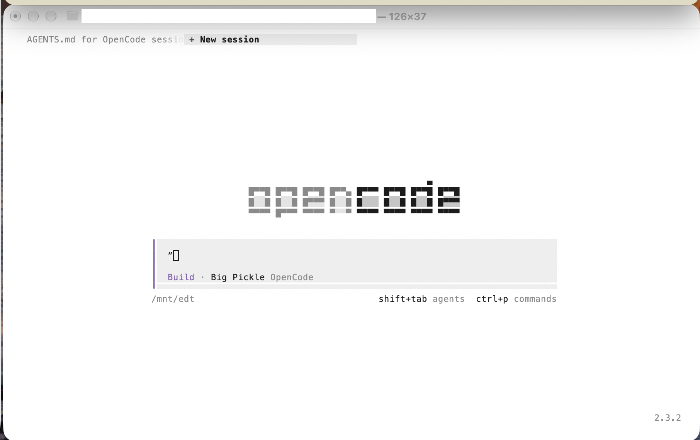

INSA Lyon · Formation · 4 séances de TP
Développement d'une application par la voie agentique avec opencode
Déroulé des séances, schémas d'appui et exercices corrigés. On travaille avec des modèles locaux modestes : les exercices restent courts, découpés, et vérifiables à l'œil.
Une initiation pour celles et ceux qui ne sont pas informaticiens : confier de petites tâches à un assistant d'IA qui agit, comprendre ce qu'il fait en coulisses, et reprendre la main quand il se trompe.
Avant de commencer. Demandez votre accès à Stéphane Frénot. Pour suivre le TP, il faut se connecter à un environnement opencode. Deux possibilités :
- Le bureau virtuel de l'INSA : ouvrez la machine « opencode ». Il n'y a rien à installer.
- Une connexion à distance depuis votre ordinateur vers la machine d'accès, dont le nom vous est donné avec votre accès, en étant connecté au VPN de l'INSA. Ouvrez la fenêtre de commande de votre ordinateur (Terminal sur macOS et Linux, Terminal ou PowerShell sur Windows) et tapez
ssh <login>@<machine-acces>.
Sous Windows, vérifiez que la commande ssh est disponible : Paramètres → Système → Fonctionnalités facultatives → « Client OpenSSH ».
Prérequis. Avant la première séance, chaque participant doit avoir obtenu son accès auprès de Stéphane Frénot. Il donne accès à un environnement opencode et aux modèles du cours. Il y a deux voies d'accès :
- SSH vers la machine d'accès (
<machine-acces>, communiquée avec l'accès), à travers le VPN INSA, depuis le terminal natif (macOS, Linux, Windows). Sous Windows, activer le client OpenSSH : Paramètres → Système → Fonctionnalités facultatives → « Client OpenSSH ». - Bureau virtuel : la machine « opencode » du bureau virtuel de l'INSA.
On peut aussi travailler depuis son éditeur, par exemple VS Code avec l'extension Remote-SSH : terminal, fichiers et éditeur sur la machine d'accès dans la même fenêtre. Vérification : ssh <login>@<machine-acces>, puis opencode models | grep wired.
Installation d'opencode sur un autre poste : voir le site opencode.ai. Il est déjà installé sur la machine d'accès et sur le bureau virtuel.
Plan général
Le cours progresse de l'usage vers la compréhension, puis vers la maîtrise. On commence par se servir d'opencode, on regarde ensuite ce qu'il envoie réellement au modèle, on ajoute des agents spécialisés, et on termine par l'exploitation : sessions, diagnostic, réinitialisation et mini-projet.
| Séance | Thème | Notions clés | Livrable de fin de séance |
|---|---|---|---|
| S1 | Du prompt à l'agent | 4 niveaux d'interaction, approche agile / ingénierie, boucle agentique, TUI et mode headless | Page HTML « compteur » générée par l'agent |
| S2 | Harnais et contexte | Ce que voit le LLM, tokens et fenêtre, compaction, AGENTS.md, permissions, /undo, skills | AGENTS.md et opencode.json de projet |
| S3 | Outils et agents | Outils minimaux, agents Plan/Build, sous-agents, modèle léger, extensions (skills, MCP, plugins) | Deux sous-agents : web-explore et remote-python |
| S4 | État, maintenance, projet | Sessions et base, service de fond, diagnostic, réinitialisation graduée | Mini-projet au choix (quiz, boîte en papier, emploi du temps) réalisé à partir d'une spécification |
Objectifs du cours
- Programmer des applications simples mais démonstratives par la voie agentique.
- Interagir avec le CLI opencode et comprendre les actions possibles.
- Comprendre l'architecture fonctionnelle d'opencode : boucle, harnais, contexte, outils, agents.
- Savoir maintenir et réinitialiser opencode sans perdre son travail.
L'infrastructure utilisée
opencode tourne sur une machine de TP. Il ne calcule rien lui-même : chaque appel au modèle part en HTTP vers la passerelle LiteLLM, qui le transmet au Mac Studio où les modèles sont chargés. Les sessions sont stockées dans une base SQLite gérée par un service de fond. Le TUI n'est qu'un client de ce service.
À vérifier avant la séance 1. Chaque compte étudiant doit avoir le fournisseur litellm déclaré dans ~/.config/opencode/opencode.json (URL http://gatewayllm:4000/v1 et clé personnelle). La commande opencode models | grep wired doit lister les deux modèles du cours.
Comment opencode trouve un modèle
Un modèle se désigne par un identifiant fournisseur/modèle. La première partie dit à opencode par où passer, la seconde quel modèle demander. La liste vient de deux sources :
- Les fournisseurs déclarés dans
opencode.json: icilitellm. Le pluginopencode-plugin-litellminterroge la passerelle et récupère tout seul la liste des modèles qu'elle sert. Il n'y a rien à recopier dans la configuration. - Le fournisseur intégré
opencode(OpenCode Zen), un service en ligne qui propose des modèles hébergés, dont certains gratuits.
litellm/… reste dans le réseau de l'école, opencode/… part vers un service sur internet.| Identifiant | Fournisseur | Où il tourne | Usage dans le cours |
|---|---|---|---|
litellm/ll_wired-qwen3.8:27b-mlx | litellm, déclaré dans opencode.json | serveurllm, via gatewayllm | Raisonnement, agent principal (fenêtre de 110 k tokens, 16 Go en mémoire) |
litellm/ll_wired-qwen3.5:0.8b | litellm | serveurllm, via gatewayllm | Sous-agents légers (web-explore, 500 Mo en mémoire) |
opencode/big-pickle | opencode, intégré (OpenCode Zen) | Service en ligne, hors INSA | Modèle gratuit proposé par défaut au premier lancement. Pratique pour tester, mais les questions et les fichiers lus quittent le réseau de l'école. |
Pour chercher un modèle :
opencode models | grep qwen # filtrer la liste complète dans le shell
opencode models | grep -i pickle
# dans le TUI : /models, puis taper quelques lettres (« qwen », « pickle ») pour filtrer
opencode run -m litellm/ll_wired-qwen3.5:0.8b "Dis bonjour en une phrase."
opencode run -m opencode/big-pickle "Dis bonjour en une phrase."Dans le nom ll_wired-qwen3.8:27b-mlx, le début désigne l'hébergement côté passerelle et la fin le modèle et son format (27b : 27 milliards de paramètres, mlx : format pour puces Apple). Le choix fait avec /models vaut pour la session. Un agent peut imposer le sien avec la ligne model: de son fichier (S3).
Séance 1 · Du prompt à l'agent
À la fin de la séance, l'étudiant sait
- situer une demande parmi les 4 niveaux d'interaction ;
- lancer opencode, choisir un modèle, dialoguer et exporter une session ;
- expliquer la boucle agentique et pourquoi son déroulement n'est pas déterministe ;
- faire produire une petite application par l'agent.
Déroulé
| Durée | Activité | Support |
|---|---|---|
| 0:00–0:15 | Tour de table : outil de chat habituel ? accès à un LLM souverain ? quel CLI (pi, opencode, Claude Code, qwen code) ? | Questions du cours |
| 0:15–0:45 | Les 4 niveaux d'interaction. Approche agile et approche ingénierie. | Schéma 1 |
| 0:45–1:05 | Qu'est-ce qu'un CLI/TUI ? Démonstration : opencode, /models, premier échange. | Démonstration en direct |
| 1:05–1:30 | La boucle agentique. | Schéma 2 |
| 1:30–2:00 | TP : E1, expérience test1 / test2 | Exercice E1 |
| 2:00–2:25 | TP : E2, mode headless, et E3, les outils minimaux | Exercices E2, E3 |
| 2:25–3:00 | TP : E4, première application | Exercice E4 |
Les 4 niveaux d'interaction
D'un niveau au suivant, la demande s'enrichit. Au niveau 4, la demande ne part plus en une seule fois : elle déclenche une suite d'allers-retours entre la machine et le modèle.
Deux façons extrêmes de chercher une solution :
- Agile : on dialogue avec l'agent et on converge par questions et réponses successives.
- Ingénierie : on prépare des documents en amont (spécification,
AGENTS.md), puis on les confronte au raisonnement du modèle.
| Agile | Ingénierie | |
|---|---|---|
| Ce qu'elle permet | Corriger les éléments au fil de l'évolution, et suivre le raisonnement du modèle | Reproduire les résultats, par exemple pour essayer différentes solutions à une problématique générique |
| À choisir pour | Un prototype, la création d'un document, une solution ponctuelle | Standardiser un projet de production : la démarche d'ingénierie y est obligatoire |
Dans ce cours, sur 4 séances, on déroule une approche agile, en précisant les éléments d'ingénierie quand c'est possible : AGENTS.md en S2, fichiers d'agents en S3, SPEC.md des mini-projets en S4. Toutes les solutions intermédiaires, avec une documentation partielle, sont valides, et l'évolution des modèles ne permet pas de stabiliser une approche plus qu'une autre.
Qu'est-ce qu'un CLI comme opencode ?
Un CLI (Command Line Interface) ou TUI (Terminal User Interface) est un interpréteur de commandes transmises par un terminal. On lance la commande opencode (ou claude) dans sa fenêtre.

Cette fenêtre est l'équivalent strict du shell qui dialogue avec le système d'exploitation, sauf que ce shell-ci dialogue avec un LLM, et éventuellement avec le système. C'est un agent qui tourne sur la boucle d'action suivante.
La boucle agentique
La réponse finale peut arriver tout de suite, comme lorsqu'on interroge un moteur de recherche ou qu'on reste au niveau du prompt. Cette boucle est le point clé de la programmation agentique : elle est pilotable, configurable et autonome. Il est pourtant impossible de lui donner un comportement exact et formel, car son déroulement dépend de la demande initiale et du modèle utilisé. Elle est subie.
Note. On peut limiter le nombre de tours de la boucle avec le paramètre steps d'un agent ou d'un sous-agent (par exemple steps: 25). Cela évite qu'il parte en boucle : une fois la limite atteinte, il doit répondre. Voir les fichiers d'agents de la séance 3.
Exercices
E1 Prompt direct ou fichier joint : comparer les exports découverte · 25 min
mkdir test1 && cd test1 && opencode. Choisirlitellm/ll_wired-qwen3.8:27b-mlxavec/models. Écrire : Bonjour, qui es-tu ? puis/export.- Dans un autre terminal :
mkdir test2 && cd test2 && echo "Bonjour, qui es-tu ?" > greeting.md && opencode. Taper@greeting.md, valider, puis/export. - Comparer les deux exports : nombre de messages, présence d'un appel d'outil, taille.
Correction
- Dans test1, l'export contient un message utilisateur et une réponse texte, sans outil.
- Dans test2, la mention
@greeting.mdfait lire le fichier par le harnais. Son contenu est injecté dans le message avec le chemin du fichier, sous forme de partie « fichier » ou de résultat deread. L'export est plus dense alors que la question est la même. - Mesure rapide :
wc -csur les deux exports. Le compteur de tokens de la barre latérale montre aussi l'écart. - Ce qu'il faut retenir : le modèle a reçu plus que la phrase tapée, et c'est le harnais qui a ajouté ce texte. Dans les deux cas, la réponse « qui es-tu » dépend aussi du prompt système d'opencode, invisible à l'écran.
E2 Le mode headless : opencode run découverte · 15 min
Sans ouvrir le TUI, demander à l'agent de compter les fichiers .md du dossier courant, une fois en sortie texte et une fois en sortie JSON. Repérer dans le JSON les appels d'outils.
Correction
cd test2
opencode run -m litellm/ll_wired-qwen3.8:27b-mlx \
"Combien y a-t-il de fichiers .md dans ce dossier ? Réponds par un nombre."
opencode run -m litellm/ll_wired-qwen3.8:27b-mlx --format json \
"Combien y a-t-il de fichiers .md dans ce dossier ? Réponds par un nombre." > run.json
grep -o '"tool":"[a-z_]*"' run.json | sort | uniq -cOn doit voir au moins un appel glob, bash (ls) ou list avant la réponse 1. Chaque exécution crée aussi une session. Avec --archived, elle n'apparaît pas dans /sessions, ce qui est pratique pour des scripts.
Le choix d'outil peut changer d'une exécution à l'autre : on voit concrètement que la boucle n'est pas déterministe.
E3 Les fonctions minimales pour travailler avec un OS réflexion · 10 min
Avant de regarder la liste des outils d'opencode : de quelles actions minimales un agent a-t-il besoin pour tout faire sur un ordinateur ? Les classer par catégorie.
Correction
| Besoin | Outil opencode | Remarque |
|---|---|---|
| Lire | read | Indispensable pour observer |
| Écrire, modifier | edit (et écriture) | Agir sur le projet |
| Exécuter | bash / shell | À lui seul, il couvre presque tout le reste |
| Chercher | glob, grep | Économise le contexte par rapport à un read complet |
| Interroger l'humain | question | Lever une ambiguïté |
| S'organiser | todowrite / todoread | Mémoire de travail de la session |
| Déléguer | task (sous-agent) | Voir S3 |
| Sortir de la machine | webfetch, websearch | Information externe |
Le minimum strict, c'est lire, écrire et exécuter. Les autres outils existent pour la sécurité (des permissions plus fines que « bash ») et pour l'efficacité (moins de tokens consommés).
E4 Première application : un compteur de clics application · 35 min
Dans un dossier compteur/, faire produire par l'agent un fichier unique index.html : un bouton « +1 », un bouton « Remise à zéro », l'affichage de la valeur, sans bibliothèque externe. Ouvrir le résultat dans un navigateur.
Contrainte : obtenir le résultat en un seul prompt, puis l'améliorer en deux prompts au plus (ajout d'un bouton « −1 » qui ne descend jamais sous 0).
Correction
Prompt qui fonctionne bien avec le 27b :
Crée un fichier index.html autonome (HTML, CSS et JavaScript dans le même fichier,
aucune bibliothèque externe). Il affiche un nombre au centre, initialisé à 0,
et deux boutons : "+1" et "Remise à zéro". Moins de 60 lignes.Résultat attendu, à comparer avec celui de l'agent :
<!doctype html>
<html lang="fr"><head><meta charset="utf-8"><title>Compteur</title>
<style>body{font-family:sans-serif;text-align:center;margin-top:20vh}
#v{font-size:4rem}button{font-size:1.2rem;margin:.3rem}</style></head>
<body>
<div id="v">0</div>
<button id="plus">+1</button>
<button id="moins">-1</button>
<button id="raz">Remise à zéro</button>
<script>
let n = 0; const v = document.getElementById('v');
const maj = () => v.textContent = n;
plus.onclick = () => { n++; maj(); };
moins.onclick = () => { if (n > 0) n--; maj(); };
raz.onclick = () => { n = 0; maj(); };
</script>
</body></html>Points de vérification : la page s'ouvre sans erreur dans la console du navigateur, le bouton −1 s'arrête à 0, aucune balise <script src> externe n'apparaît. Si le modèle produit un projet complet (npm, framework), c'est que le prompt n'était pas assez contraint. On rappelle « fichier unique » et « aucune bibliothèque ».
Séance 2 · Harnais et contexte
À la fin de la séance, l'étudiant sait
- distinguer ce que le harnais fait de ce que le modèle voit ;
- estimer la taille d'un contexte et anticiper la compaction ;
- écrire un
AGENTS.mdutile pour un petit modèle ; - régler les permissions allow ask deny et annuler une modification.
Déroulé
| Durée | Activité | Support |
|---|---|---|
| 0:00–0:25 | Les choses cachées : harnais et contexte | Schéma 3 et tableau |
| 0:25–0:40 | Tokens, fenêtre, compaction : ordres de grandeur entre Claude et Qwen | Tableaux du cours |
| 0:40–1:15 | TP : E5, écrire un AGENTS.md | Exercice E5 |
| 1:15–1:50 | TP : E6, permissions de projet | Exercice E6 |
| 1:50–2:05 | TP : E7, /undo et /redo | Exercice E7 |
| 2:05–2:30 | TP : E8, mesurer et compacter le contexte | Exercice E8 |
| 2:30–3:00 | Les skills. TP : E9, une skill de cuisine | Exercice E9 |
Harnais et contexte
AGENTS.md améliore le contexte mais ne change rien au harnais. À l'inverse, changer de harnais avec le même modèle change le résultat.| Harnais | Contexte | |
|---|---|---|
| Nature | Du code qui tourne sur la machine | Du texte (des tokens) |
| Durée de vie | Toute la session | Reconstruit à chaque appel au LLM |
| Rôle | Décide quoi envoyer, exécute, applique les règles | Ce que le modèle « sait » à cet instant |
| Limite | Ce que le programme sait faire | La fenêtre : 110 000 tokens déclarés pour le 27b |
| On agit dessus via | Config, plugins, agents, permissions | Ce qu'on écrit, les fichiers lus, /compact |
Repères. 1 token ≈ 0,65 mot en français ≈ 3,8 caractères. 110 000 tokens représentent environ 230 pages de livre, dont 10 à 20 k sont consommés avant le premier message (prompt système, outils, AGENTS.md). La sortie est limitée à 8 192 tokens : un fichier long ne peut pas être écrit d'un seul coup.
Autres repères : 1 page de livre ≈ 300 mots, 1 page Word ≈ 500 mots, 1 feuillet = 1 500 signes. Les tokenizers diffèrent d'un modèle à l'autre : ce sont des ordres de grandeur.
Le contexte est la zone de rappel que le harnais transmet au LLM à chaque appel, complétée des nouveaux faits significatifs. Sa taille fait le coût d'une session et s'ajoute à la mémoire dont le modèle a besoin pour produire une réponse. Pour aller plus vite, il peut être mis en cache sur le serveur afin de ne pas être rechargé à chaque appel. La taille de la fenêtre pèse beaucoup sur les capacités de raisonnement : avec 110 k tokens, le Qwen 3.8 peut recevoir à chaque requête l'équivalent d'environ 230 pages. Lors d'un compactage, la fenêtre est réduite et une partie de l'information précédente est perdue. Le compactage peut être problématique sur certains modèles.
Claude et Qwen : fenêtre de contexte
| Claude (Opus 5.5) | ll-qwen3.8:27b-mlx | |
|---|---|---|
| Harnais | Claude Code | opencode |
| Fenêtre de contexte | 1 000 000 tokens | 262 144 au maximum (modèle), 110 000 déclarés dans opencode |
| En pages de livre (~300 mots) | ~2 200 pages | ~600 au maximum, ~230 avec la limite d'opencode |
| En pages Word (~500 mots) | ~1 300 pages | ~140 pages (limite d'opencode) |
| Réservé avant la conversation | ~31 k (prompt, outils, skills, MCP) | ~10 à 20 k (prompt, outils, AGENTS.md) |
| Marge de compaction / sortie | 33 k (compaction automatique) | 8 192 (sortie maximale) |
| Taille du modèle | Non publiée | 27,8 milliards de paramètres, NVFP4 (4 bits) |
| Où il tourne | Cloud Anthropic | Local : serveurllm (Mac Studio M2 Ultra, 192 Go), via LiteLLM |
| Coût | Payant | Gratuit (hors électricité) |
| Confidentialité | Données envoyées à Anthropic | Rien ne sort du réseau INSA |
Exemple : occupation d'une session Claude (/context)
| Catégorie | Tokens | % |
|---|---|---|
| Prompt système | 3 k | 0,3 % |
| Outils système | 18,3 k | 1,8 % |
| Outils différés (système + MCP) | 30,2 k | 3,0 % |
| Skills | 6,2 k | 0,6 % |
| Instructions MCP | 0,7 k | 0,1 % |
| Messages (la conversation) | 122,4 k | 12,2 % |
| Marge d'autocompaction | 33 k | 3,3 % |
| Espace libre | 816,4 k | 81,6 % |
| Total utilisé | 150,7 k / 1 M | 15 % |
Le fichier AGENTS.md pilote ce contexte : il indique les informations pertinentes et peut déclencher certaines actions. Le contexte peut aussi être manipulé par les fichiers de configuration du CLI, et certaines actions produisent une information qui y est ajoutée.
Exercices
E5 Un AGENTS.md pour un petit modèle configuration · 40 min
Dans compteur/, lancer /init et lire le fichier AGENTS.md produit. Le remplacer par un fichier de 10 lignes au plus qui impose : réponses en français, fichiers HTML autonomes, modifications par petites étapes, et vérification de la taille d'un fichier avant de le lire. Tester avec : Ajoute un historique des 5 dernières valeurs sous le compteur.
Correction
# Projet compteur
- Réponds toujours en français, en phrases courtes.
- Une application = un seul fichier HTML autonome, sans bibliothèque externe.
- Modifie le code par petites étapes : un `edit` ne remplace pas plus de 50 lignes.
- N'écris jamais plus de 150 lignes en un seul appel : squelette d'abord, puis `edit`.
- Si un `edit` échoue, relis le fichier avant de réessayer ; ne répète pas le même appel.
- Avant de lire un fichier, regarde sa taille (`wc -l`) ; au-delà de 200 lignes,
utilise `grep` ou lis seulement les lignes utiles.Ces règles viennent de l'AGENTS.md utilisé sur la machine de préparation. Elles corrigent des échecs réels du 27b : des edit trop gros qui échouent, ou la lecture d'un fichier entier qui sature le contexte. Pour observer l'effet, refaire la demande avec et sans le fichier, puis comparer le nombre d'appels edit dans /export.
Point de cours : AGENTS.md est injecté à chaque appel. Chaque ligne coûte des tokens sur tous les tours, il faut donc rester bref.
E6 Permissions de projet configuration · 40 min
Créer un opencode.json à la racine de compteur/ qui : demande confirmation avant toute modification de fichier, interdit rm, autorise ls et cat sans demander, et demande pour le reste des commandes shell. Tester en demandant à l'agent de supprimer index.html.
Correction
{
"$schema": "https://opencode.ai/config.json",
"permission": {
"edit": "ask",
"bash": {
"*": "ask",
"ls*": "allow",
"cat *": "allow",
"rm *": "deny"
}
}
}Vérification : opencode debug config liste les sources de configuration fusionnées (globale puis projet). Lors du test, la commande rm est refusée sans dialogue, et l'agent doit l'expliquer. Un petit modèle tente parfois un contournement (mv, find -delete) : c'est l'occasion de montrer que "*": "ask" le rattrape.
La règle la plus spécifique l'emporte : rm * passe avant *. C'est le même mécanisme que le python*: deny de la configuration globale, qui oblige à passer par le sous-agent distant (S3).
E7 Revenir en arrière manipulation · 20 min
Demander : Passe le fond de la page en bleu foncé et le texte en blanc. Vérifier dans le navigateur, puis taper /undo, recharger la page, taper /redo et recharger encore.
Correction
/undo retire le dernier échange et restaure les fichiers modifiés pendant ce tour. Le fond redevient clair et le message réapparaît dans la zone de saisie, prêt à être reformulé. /redo rétablit l'échange et les fichiers.
Limite à faire constater : une action externe (une requête web, une commande sur une autre machine) n'est pas annulée. Seuls les fichiers du projet le sont.
E8 Mesurer et compacter le contexte observation · 30 min
Générer un gros fichier : seq 1 20000 | sed 's/^/ligne /' > gros.txt. Dans une nouvelle session, demander Lis gros.txt et dis-moi ce que contient la ligne 12345, en notant le compteur de tokens. Recommencer dans une autre session avec l'AGENTS.md de E5. Enfin, lancer /compact et comparer.
Correction
- Sans consigne, l'agent lit le fichier :
readtronque, mais plusieurs milliers de tokens partent quand même, et le modèle peut répondre faux s'il n'a vu qu'un extrait. - Avec la règle «
wc -lpuisgrep», l'agent faitgrep -n "^ligne 12345$" gros.txt: quelques dizaines de tokens et une réponse exacte. /compactremplace l'historique par un résumé : le compteur baisse, mais les détails (par exemple le numéro exact) peuvent disparaître. C'est le prix de la compaction. Ici,"compaction": {"auto": true}la déclenche aussi automatiquement près de la limite.
La commande /btw : une question à côté
/btw pose une question ponctuelle sur la session en cours, sans l'ajouter à la conversation. Exemple : /btw que fait la fonction maj() du compteur ?
- Le modèle répond à partir du contexte déjà présent dans la session.
- La réponse s'affiche dans une fenêtre séparée, et ni la question ni la réponse ne sont ajoutées à l'historique.
- Le modèle n'appelle aucun outil et ne fait aucune action : il ne lit pas de fichier et ne modifie rien.
C'est l'outil adapté pour demander une explication en cours de travail. Le contexte ne grossit pas, et l'agent ne se met pas à modifier le code à partir d'une simple question. S'il faut lire un fichier qui n'est pas encore dans le contexte, posez une question normale.
Les skills : un savoir-faire chargé à la demande
Une skill est un dossier qui contient un fichier SKILL.md : un en-tête (name, description) suivi d'instructions. Au démarrage, opencode ne place dans le contexte que le nom et la description de chaque skill. Quand une demande correspond à la description, le modèle appelle l'outil skill, et c'est seulement à ce moment que les instructions entrent dans le contexte.
AGENTS.md | Skill | |
|---|---|---|
| Chargé | À chaque appel | À la demande, quand le modèle le décide |
| Contenu | Règles générales du projet | Procédure précise pour une tâche donnée |
| Coût en contexte | Tout le texte, tout le temps | La description seule, puis le texte quand la skill sert |
| Déclenchement | Automatique | Par le modèle, d'après la description |
On range donc dans une skill un savoir-faire précis et occasionnel. La description fait tout le travail de déclenchement : elle doit reprendre les mots que l'utilisateur emploiera. Pour charger les skills de façon fiable, on utilise le Qwen 3.8 (27b).
E9 Une skill de cuisine : recette-ajustee configuration · 30 min
Dans un dossier cuisine/, créer le fichier .agents/skills/recette-ajustee/SKILL.md :
---
name: recette-ajustee
description: Adapte une recette de cuisine à un nombre de personnes et produit la liste de courses. À utiliser dès qu'on demande d'ajuster une recette, de changer le nombre de personnes ou de préparer les courses d'un repas.
---
1. Calcule le coefficient : personnes voulues ÷ personnes de la recette.
2. Multiplie chaque quantité. Arrondis à l'unité ce qui ne se coupe pas
(œufs, citrons, pincées) ; arrondis les grammes à 10 g près.
3. Écris la recette ajustée, puis la liste de courses regroupée par rayon :
frais, épicerie, fruits et légumes.
4. Termine par une ligne : « Coefficient appliqué : × … ».Lancer opencode avec le modèle litellm/ll_wired-qwen3.8:27b-mlx et vérifier avec /skills que la skill est reconnue. Demander ensuite :
Voici ma recette de crêpes pour 4 personnes : 250 g de farine, 3 œufs,
50 cl de lait, 1 pincée de sel. Adapte-la pour 10 personnes et fais-moi
la liste de courses.Refaire la même demande dans un dossier sans la skill, puis comparer les deux exports (/export).
Correction
Résultat attendu avec la skill :
Crêpes pour 10 personnes
- 630 g de farine
- 8 œufs
- 125 cl de lait (1,25 l)
- 3 pincées de sel
Liste de courses
- Frais : 8 œufs, 1,25 l de lait
- Épicerie : 630 g de farine, sel
- Fruits et légumes : rien
Coefficient appliqué : × 2,5- Dans l'export, un appel à l'outil
skill(avecrecette-ajustee) précède la réponse : les instructions sont entrées dans le contexte à ce moment-là, pas avant. - Les règles sont appliquées : 7,5 œufs arrondis à 8, 625 g de farine arrondis à 630 g, liste rangée par rayon, ligne finale du coefficient.
- Sans la skill, le format change d'une fois à l'autre, et l'on voit souvent « 7,5 œufs » ou une liste de courses non classée.
- Si le modèle ne charge pas la skill, deux réglages : enrichir la description avec les mots de la demande (« recette », « personnes », « courses »), ou demander explicitement Utilise la skill recette-ajustee.
E9b Trouver et installer une skill existante pour aller plus loin · 25 min
Avec le Qwen 3.8, demander simplement :
find a skill for png processingSuivre ce que fait l'agent, puis, avant d'accepter l'installation, lui faire afficher le SKILL.md trouvé. Une fois la skill installée, vérifier avec /skills, puis demander : Redimensionne photo.png à 50 %.
Correction
- La demande déclenche la skill
find-skills, si elle est installée (c'est le cas sur la machine d'accès, dans~/.agents/skills/). Elle décrit l'écosystème des skills (skills.sh) et son CLInpx skills find/npx skills add. npxn'est pas installé sur la machine d'accès : l'agent se rabat sur GitHub et trouvegithub/awesome-copilot@image-manipulation-image-magick(formatpropriétaire/dépôt@skill). Il l'installe dans~/.agents/skills/image-manipulation-image-magick/SKILL.md.- L'en-tête de la skill contient :
compatibility: Requires ImageMagick installed and available as magick on PATH. Or ImageMagick n'est pas installé sur la machine d'accès : la demande de redimensionnement échoue (magickintrouvable). Une skill apporte un savoir-faire, pas les outils qu'il utilise. - Deux issues : demander l'installation d'ImageMagick à l'administrateur, ou faire exécuter les commandes sur une autre machine, comme le sous-agent
remote-pythonde la séance 3. - Sécurité. Une skill trouvée sur internet est écrite par un inconnu, et elle entre dans le contexte avec autorité. Elle peut faire lancer des commandes. On la lit avant de l'installer, comme un script, et les permissions (
"*": "ask") restent le filet de sécurité.
E9c Une skill Excel : la recette en tableur pour aller plus loin · 35 min · après E13
Ajouter une skill de traitement de fichiers Excel, puis l'utiliser sur la recette de E9 :
- Avec le Qwen 3.8, dans le dossier
cuisine/:find a skill for excel files. Lire leSKILL.mdproposé avant d'accepter l'installation, puis vérifier avec/skills. - Demander ensuite :
À partir de la recette de crêpes ajustée pour 10 personnes, fabrique un
fichier recette.xlsx avec deux feuilles :
- "Recette" : le nombre de personnes de la recette (4) et le nombre voulu (10),
le coefficient, puis un tableau Ingrédient / Unité / Pour 4 / Pour 10, où la
colonne Pour 10 est calculée par des formules à partir du coefficient ;
- "Courses" : la liste de courses par rayon, qui reprend les quantités de la
feuille Recette.Récupérer recette.xlsx sur son poste, l'ouvrir dans Excel ou LibreOffice, puis changer le nombre de personnes voulues.
Correction
find-skillspropose la skillxlsxdu dépôtanthropics/skills(anthropics/skills@xlsx). Elle s'installe dans~/.agents/skills/xlsx/avec unSKILL.md, une licence et un dossierscripts/(dontrecalc.py).- Sa lecture montre ses prérequis : Python avec
openpyxletpandas, et LibreOffice pour recalculer les formules. Sur la machine d'accès, Python est interdit par les permissions (python*: deny),openpyxln'est pas installé et LibreOffice non plus. - L'agent écrit donc le script (par exemple
creer_recette.py) et le confie au sous-agentremote-python(E12), qui l'exécute surserveurllmavec~/.local/bin/uv run --with openpyxl creer_recette.py, puis rapatrierecette.xlsxavecscp. D'où le prérequis : avoir fait E12 et E13. - La skill impose ses règles, et c'est tout son intérêt : police Arial, formules plutôt que valeurs calculées, hypothèses documentées. Feuille « Recette » attendue :
| Cellule | Contenu | Valeur affichée |
|---|---|---|
| B1 | Personnes de la recette | 4 |
| B2 | Personnes voulues | 10 |
| B3 | =B2/B1 | 2,5 |
| D6 | Farine : =ROUND(C6*$B$3,-1) | 630 |
| D7 | Œufs : =ROUNDUP(C7*$B$3,0) | 8 |
| D8 | Lait (cl) : =C8*$B$3 | 125 |
| D9 | Sel (pincées) : =ROUNDUP(C9*$B$3,0) | 3 |
- La feuille « Courses » renvoie à ces cellules (
=Recette!D7…) plutôt que de recopier les nombres. En passant B2 de 10 à 6, toute la recette et la liste de courses se recalculent à l'ouverture. - L'étape de recalcul de la skill (
recalc.py, qui appelle LibreOffice) échoue faute de LibreOffice. Ce n'est pas bloquant : Excel ou LibreOffice recalculent les formules à l'ouverture du fichier. C'est un nouvel exemple de skill dont un outil manque, comme ImageMagick en E9b.
Séance 3 · Outils, agents et orchestration
À la fin de la séance, l'étudiant sait
- alterner entre les agents primaires Plan et Build ;
- décrire un sous-agent dans un fichier Markdown : modèle, permissions, procédure ;
- confier une tâche simple à un modèle de 0,8 milliard de paramètres ;
- déporter l'exécution de code sur une machine tierce.
Déroulé
| Durée | Activité | Support |
|---|---|---|
| 0:00–0:20 | Retour sur E3 : la liste des outils d'opencode et leur statut | Tableau des outils du cours |
| 0:20–0:45 | Agents primaires (Shift+Tab) et sous-agents (explore, general, puis les nôtres) | Schéma 4, E10 |
| 0:45–1:30 | TP : E11, sous-agent d'exploration web sur le 0,8b | Exercice E11 |
| 1:30–2:20 | TP : E12, sous-agent d'exécution Python distante | Exercice E12 |
| 2:20–2:45 | TP : E13, orchestration complète | Exercice E13 |
| 2:45–3:00 | Extensions : skills, MCP, plugins. Comment choisir ? | Discussion |
Les outils d'opencode et leur statut
Dans la boucle, le LLM demande implicitement des actions au CLI. Leur nombre est limité : il n'est pas nécessaire de savoir faire beaucoup de choses pour pouvoir tout faire. Exemple sur la machine de préparation, pour l'agent Build :
| Outil | Catégorie | Rôle | Statut (agent build) |
|---|---|---|---|
read | Fichiers | Lire un fichier | autorisé (*.env : demande) |
edit | Fichiers | Modifier ou créer un fichier | autorisé |
glob | Recherche | Trouver des fichiers par motif (**/*.py) | autorisé |
grep | Recherche | Chercher dans le contenu des fichiers | autorisé |
shell | Exécution | Exécuter une commande bash | autorisé (sauf python*, pip*, uv *, pytest*, ipython* : interdit) |
webfetch | Web | Lire une page web | autorisé |
websearch | Web | Faire une recherche web | autorisé |
browser | Web | Piloter un navigateur | interdit |
todowrite | Organisation | Écrire la liste de tâches de la session | autorisé |
todoread | Organisation | Lire la liste de tâches | autorisé |
question | Interaction | Poser une question à l'utilisateur | autorisé |
skill | Extension | Charger une skill | autorisé |
subagent | Délégation | Déléguer à un sous-agent (explore, general…) | autorisé |
external_directory | Permission | Accès aux fichiers hors du projet | autorisé |
Orchestration par sous-agents
La boucle tourne avec un agent principal, dans le TUI ou sans interface avec opencode run. Elle peut lancer plusieurs agents qui s'occupent chacun d'une tâche, par exemple : Lance 3 agents pour vérifier le prix des yaourts chez Auchan, Leclerc et Intermarché. L'agent explore analyse du code ou un répertoire à plusieurs niveaux de profondeur (quick, medium, thorough). L'agent general peut lancer d'autres agents.
web-explore ne remplit pas le contexte A.Exercices
E10 Plan puis Build manipulation · 20 min
Dans un dossier convertisseur/, passer en agent Plan avec Shift+Tab et demander : Prépare le plan d'une page HTML autonome qui convertit des °C en °F et inversement. Constater que rien n'est écrit. Repasser en Build et demander : Applique le plan.
Correction
L'agent Plan a les modifications de fichiers désactivées ou soumises à demande : il propose un plan (fichier unique, deux champs, formule F = C × 9/5 + 32, mise à jour à la saisie) sans toucher au disque. Le passage en Build garde l'historique : le plan est dans le contexte et Build l'exécute. opencode debug agents montre les permissions effectives de chacun.
Ce qu'il faut retenir : un « agent » d'opencode est surtout un jeu de permissions, un prompt et un modèle appliqués à la même boucle.
E11 Sous-agent d'exploration web sur le modèle 0,8b agent · 45 min
Écrire le fichier agent d'un sous-agent web-explore qui fonctionne avec litellm/ll_wired-qwen3.5:0.8b, en lecture seule, avec uniquement les outils web et de lecture. Le tester depuis Build : Utilise web-explore pour trouver la commande d'installation d'opencode sur opencode.ai.
Correction
Fichier ~/.config/opencode/agents/web-explore.md (ou .opencode/agents/ dans le projet) :
---
description: Récupère et résume des pages web (webfetch, websearch). Lecture seule.
À utiliser pour toute recherche ou relevé d'information sur Internet.
mode: subagent
steps: 25 # garde-fou : force une réponse si le modèle boucle
model: litellm/ll_wired-qwen3.5:0.8b
permission:
task: deny # pas de sous-sous-agent
edit: deny
write: deny
shell: deny
webfetch: allow
websearch: allow
read: allow
grep: allow
glob: allow
---
Tu explores des pages web et tu résumes l'information. Tu ne modifies aucun fichier
et tu n'exécutes aucune commande.
## Procédure
1. Si l'URL est inconnue, utilise d'abord `websearch`.
2. Récupère la page avec `webfetch` (format markdown).
3. Extrais seulement les faits qui répondent à la question.
## Règles
- Une URL à la fois. Ne suppose jamais le contenu d'une page non récupérée.
- Si une URL échoue, essaie une autre source ; ne recommence pas la même.
- Réponse courte : l'essentiel et l'URL d'origine.Vérification : opencode debug agents | grep web-explore. Pour un modèle de 0,8b, trois choses font la différence : une description précise (c'est elle qui fait choisir l'agent), une procédure numérotée courte, et steps pour couper les boucles d'outils. On peut montrer en contre-exemple le même agent avec un prompt long et vague : il boucle ou invente le contenu de la page.
E12 Sous-agent d'exécution Python distante agent · 50 min
La configuration globale interdit python*, pip*, uv * et pytest* en local. Écrire un sous-agent remote-python qui copie le projet sur la machine indiquée dans sa description, y exécute le script avec uv et rapporte la sortie. Il ne modifie aucun fichier.
Correction
Squelette de ~/.config/opencode/agents/remote-python.md. Remplacer LOGIN par son identifiant sur serveurllm, après avoir installé sa clé SSH avec ssh-copy-id pour que BatchMode fonctionne.
---
description: Exécute les scripts Python sur serveurllm. À utiliser pour
TOUTE exécution de code Python, test ou installation de paquet - jamais en local.
mode: subagent
steps: 25
model: litellm/ll_wired-qwen3.8:27b-mlx
permission:
task: deny
edit: deny # exécution seule : les corrections restent au parent
bash:
"*": ask
"python*": deny
"pip*": deny
"uv *": deny
"pwd": allow
"ls*": allow
"basename *": allow
"tar czf - *": allow
"ssh -o BatchMode=yes LOGIN@serveurllm *": allow
"scp -o BatchMode=yes *": allow
---
Tu es l'agent d'exécution distante. Python ne s'exécute JAMAIS en local.
Si la connexion SSH échoue, arrête-toi et rapporte l'erreur.
Tu ne crées ni ne modifies aucun fichier. Si l'exécution échoue, ne corrige rien :
rapporte l'erreur à l'agent qui t'a lancé.
## Procédure (PROJET = résultat de `basename "$PWD"`)
1. Copier :
tar czf - --exclude=.git --exclude=.venv --exclude=__pycache__ . | \
ssh -o BatchMode=yes LOGIN@serveurllm \
"mkdir -p ~/opencode-runs/PROJET && tar xzf - -C ~/opencode-runs/PROJET"
2. Exécuter :
ssh -o BatchMode=yes LOGIN@serveurllm \
"cd ~/opencode-runs/PROJET && ~/.local/bin/uv run script.py"
3. Dépendances : ~/.local/bin/uv run --with numpy script.py (jamais pip install).
## Compte rendu
La commande exécutée, le code de sortie, les dernières lignes de la sortie.Points de cours :
- Les permissions de commande sont des motifs : la ligne
ssh ... LOGIN@serveurllm *n'autorise que cette machine. ~/.local/bin/uven chemin absolu, parce que lePATHd'une session SSH non interactive ne contient pasuv.- Ajouter dans l'
AGENTS.mddu parent : « toute exécution Python passe parremote-python; écris toi-même les scripts ». Sans cette ligne, le 27b tentepython3, se fait refuser, puis abandonne.
E13 Orchestration : écrire en local, exécuter à distance application · 25 min
Dans un dossier stats/, fournir notes.csv (colonnes nom,note, 10 lignes). Demander à Build : Écris stats.py qui affiche la moyenne, le minimum et le maximum de notes.csv avec le module csv uniquement, puis fais-le exécuter par remote-python.
Correction
import csv
with open("notes.csv", newline="", encoding="utf-8") as f:
notes = [float(r["note"]) for r in csv.DictReader(f)]
print(f"n = {len(notes)}")
print(f"moyenne = {sum(notes) / len(notes):.2f}")
print(f"min = {min(notes)} max = {max(notes)}")Séquence attendue dans l'export : edit (création de stats.py) dans le contexte A, puis task → remote-python, avec dans le contexte D les appels basename, tar | ssh et ssh … uv run stats.py, puis le compte rendu résumé renvoyé à A. Si le script échoue, c'est A qui corrige, puis relance un nouveau sous-agent.
Mécanismes d'extension
Le vocabulaire n'est pas normalisé. Ce qui distingue les mécanismes, c'est le moment où ils entrent dans le contexte et ce qu'ils ajoutent au harnais.
| Mécanisme | Ce que c'est | Coût en contexte | Commande |
|---|---|---|---|
| Sous-agent | Prompt, modèle et permissions dans un fichier .md | Seule la description est chargée chez le parent | opencode debug agents |
| Skill | Instructions et fichiers chargés à la demande via l'outil skill | Description seule, puis le contenu quand il est chargé | — |
| MCP | Serveur externe qui ajoute des outils | Définitions d'outils à chaque appel | opencode mcp list |
| Plugin | Code qui modifie le harnais lui-même (ex. opencode-plugin-litellm) | Aucun en soi | opencode plugin list |
Séance 4 · État, maintenance et mini-projet
À la fin de la séance, l'étudiant sait
- retrouver, reprendre, dupliquer et exporter une session ;
- diagnostiquer une configuration cassée ;
- réinitialiser opencode au bon niveau, sans perdre son travail ;
- mener un petit projet par l'approche ingénierie.
Déroulé
| Durée | Activité | Support |
|---|---|---|
| 0:00–0:20 | Mémoire et état : le service de fond, la base, les sessions | Schéma de l'infrastructure |
| 0:20–0:45 | TP : E14, sessions | Exercice E14 |
| 0:45–1:20 | TP : E15, diagnostic d'une configuration cassée | Exercice E15 |
| 1:20–1:40 | E16 : l'échelle de réinitialisation | Tableau E16 |
| 1:40–2:50 | Mini-projet au choix : E17 (quiz), E18 (boîte en papier) ou E19 (emploi du temps) | Exercices E17 à E19 |
| 2:50–3:00 | Bilan : agile ou ingénierie ? | Discussion |
Où sont les choses (opencode debug paths). Configuration : ~/.config/opencode. Données et base des sessions : ~/.local/share/opencode/opencode.db. Journaux : ~/.local/share/opencode/log. Cache : ~/.cache/opencode. État : ~/.local/state/opencode.
Exercices
E14 Manipuler les sessions manipulation · 25 min
Retrouver la session de E4 et la reprendre. La dupliquer pour tester une variante (thème sombre) sans toucher l'originale. Exporter la session en JSON depuis le shell.
Correction
# dans le TUI
/sessions # liste et choix d'une session du projet
/resume # reprendre
/fork # dupliquer à partir du point courant
/clear # repartir d'un contexte vide (nouvelle session)
# depuis le shell
cd compteur
opencode session list
opencode -c # reprendre la dernière session
opencode session export <ID> > compteur-session.json
opencode session import compteur-session.jsonUne session est liée au projet (le dossier) : opencode session list lancé ailleurs ne la montre pas. Le fork copie l'historique, donc le contexte, mais pas les fichiers : les deux branches modifient le même index.html. Pour isoler aussi les fichiers, il faut opencode run --worktree dans un dépôt git.
E15 Diagnostiquer une configuration cassée maintenance · 35 min
Sauvegarder la configuration, puis la casser volontairement en retirant une virgule dans opencode.json du projet compteur/. Lancer opencode, observer, diagnostiquer et réparer. Faire de même avec un nom de modèle erroné dans un agent.
Correction
cp opencode.json opencode.json.bak-$(date +%Y%m%d) # toujours avant de modifier
opencode debug config # sources de config et erreur de parsing éventuelle
opencode debug agents # agent avec modèle inconnu ?
opencode models | grep wired
opencode service status # le service de fond répond-il ?
ls -t ~/.local/share/opencode/log | head -1 # journal le plus récent
tail -n 50 ~/.local/share/opencode/log/<fichier>
cp opencode.json.bak-AAAAMMJJ opencode.json # réparer
opencode service restart # recharger après un changement de config globaleMéthode à retenir : sauvegarder, puis regarder la configuration effective, les agents, les modèles, le service et les journaux, dans cet ordre. La configuration du projet se superpose à la configuration globale, donc une erreur peut venir de l'une ou de l'autre.
E16 L'échelle de réinitialisation maintenance · 20 min
Pour chaque symptôme, choisir le niveau de réinitialisation le plus bas qui le règle.
Symptômes : (a) l'agent tourne en rond depuis 20 tours ; (b) le TUI ne répond plus mais les autres sessions fonctionnent ; (c) opencode ne démarre plus du tout après une mise à jour ; (d) un plugin récemment installé fait échouer chaque appel ; (e) on veut rendre une machine de TP propre pour le groupe suivant.
Correction
| Niveau | Action | Ce qui est perdu | Symptôme |
|---|---|---|---|
| 1 | /undo, /compact ou /clear | Le contexte courant | (a) |
| 2 | opencode session delete <ID> | Une session | — |
| 3 | opencode service restart | Rien (les sessions sont en base) | (b) |
| 4 | opencode plugin remove … ou retour au .bak de config | La dernière modification de config | (d) |
| 5 | opencode service stop puis mv ~/.cache/opencode ~/.cache/opencode.old | Le cache (retéléchargé au lancement) | (c), avec opencode upgrade |
| 6 | opencode service stop puis mv ~/.local/share/opencode ~/.local/share/opencode.old | Toutes les sessions et les identifiants | (e) |
On déplace plutôt qu'on ne supprime : un retour arrière reste possible. On arrête le service avant de toucher à la base, sinon il la réécrit. opencode uninstall conserve volontairement sessions, configuration et état. Au niveau 6, il faut refaire opencode auth login si les identifiants étaient stockés là.
E17 Mini-projet : un quiz en approche ingénierie projet · 70 min
Par binôme, dans un dossier quiz/ vierge :
- Écrire à la main
SPEC.md(une demi-page au plus) etAGENTS.md, en reprenant E5. - En agent Plan : Lis SPEC.md et propose un plan en étapes de moins de 50 lignes de code chacune.
- En Build : réaliser étape par étape, vérifier dans le navigateur après chaque étape et utiliser
/undosi besoin. - Option : ajouter
check.py, qui valide le fichierquestions.json, et le faire exécuter parremote-python. - Exporter la session et noter le nombre de tours et d'échecs d'
edit.
Correction : exemple de SPEC.md et grille
# Quiz HTML
## But
Une page index.html autonome (aucune bibliothèque) qui pose 5 questions à choix multiple.
## Données
questions.json : [{"q": "...", "choix": ["a","b","c"], "bonne": 1}, ...]
Les questions sont aussi recopiées dans index.html (ouverture sans serveur).
## Comportement
- Une question à la fois, 3 boutons de réponse.
- Après un clic : vert si juste, rouge sinon, bouton "Suivante".
- À la fin : score "x / 5" et bouton "Recommencer".
## Contraintes
- Moins de 150 lignes au total. Français. Pas de framework.| Critère | Points |
|---|---|
| Le quiz fonctionne et respecte la spécification | 6 |
SPEC.md et AGENTS.md clairs, courts et testables | 4 |
| Plan découpé, étapes vérifiées une à une | 4 |
| Analyse de l'export : tours, échecs, ce qui a amélioré le comportement | 4 |
Option remote-python réussie | 2 |
Pour la discussion finale, faire réaliser le même quiz par un autre binôme en approche agile, sans SPEC.md, puis comparer le nombre de tours, la taille du contexte en fin de session et le respect des contraintes.
Mini-projets
Deux projets plus longs, à mener en binôme en S4 à la place du quiz ou en travail personnel. Ils suivent la même démarche : une spécification écrite à la main, un plan validé en agent Plan, une réalisation par petites étapes, puis une vérification qui ne dépend pas du modèle (une règle graduée, un script de contrôle).
Règle commune. Le modèle est mauvais en géométrie et en combinatoire. On ne lui demande donc ni de « calculer » un patron ni de « trouver » un emploi du temps de tête. On lui fait écrire le fichier ou le programme qui le fait, et on vérifie le résultat avec un outil.
E18 Boîte en papier de 5 cm × 5 cm avec couvercle lié projet · 70 à 90 min
Produire un patron imprimable, à l'échelle réelle, d'une boîte cubique de 5 cm de côté, dont le couvercle est attaché au dos de la boîte et fermé par un rabat glissé à l'avant. On découpe le patron, on le plie et on le colle : la boîte doit se fermer.
Livrables
SPEC.mdécrit à la main : dimensions, liste des pièces, conventions de trait, format d'impression.patron.svgà l'échelle 1 :width="160mm" height="222mm",viewBoxen millimètres, pour une impression A4 « taille réelle ».index.htmlqui affiche le patron et rappelle les étapes de pliage.- Option S3 :
patron.py, paramétré par le côtéc, qui régénèrepatron.svg. Il est exécuté parremote-pythonet le fichier est rapatrié avecscp. - La boîte réelle, pliée et collée.
Démarche conseillée
- Dessiner le patron à la main sur papier quadrillé avant d'écrire la spécification.
- Dans
SPEC.md, donner la position de chaque pièce en millimètres. C'est ce qui fait réussir un modèle de 27b : il recopie une géométrie, il ne l'invente pas. - En Build, faire produire d'abord le carré du fond seul, l'ouvrir dans le navigateur et vérifier qu'il mesure 50 mm à la règle sur l'impression. Ajouter ensuite les pièces une à une.
- Imprimer, plier, monter, et noter dans le compte rendu ce qui ne s'emboîte pas.
Correction
Extrait de SPEC.md qui suffit au modèle :
# Patron de boîte 5 cm avec couvercle lié
Unités : millimètres. Feuille SVG : width="160mm" height="222mm" viewBox="0 0 160 222".
Traits : découpe = trait plein noir 0.3 ; pli = pointillé 2 1.5.
| Pièce | Forme | Position (x, y, largeur, hauteur) ou sommets |
|------------|-----------|---------------------------------------------|
| couvercle | carré | 55, 15, 50, 50 |
| dos | carré | 55, 65, 50, 50 |
| fond | carré | 55, 115, 50, 50 |
| avant | carré | 55, 165, 50, 50 |
| côté G | carré | 5, 115, 50, 50 |
| côté D | carré | 105, 115, 50, 50 |
| rabat | trapèze | (57,15) (61,5) (99,5) (103,15) |
| rabats couvercle | trapèzes | (55,17)(45,25)(45,55)(55,63) et symétrique en x=105 |
| languettes | trapèzes de 10 mm | bords haut et bas des deux côtés |
Plis : toutes les arêtes communes entre deux pièces.Résultat attendu pour patron.svg (extrait) :
<svg xmlns="http://www.w3.org/2000/svg" width="160mm" height="222mm" viewBox="0 0 160 222">
<g fill="none" stroke="#000" stroke-width="0.3">
<rect x="55" y="15" width="50" height="50"/> <!-- couvercle -->
<rect x="55" y="65" width="50" height="50"/> <!-- dos -->
<rect x="55" y="115" width="50" height="50"/> <!-- fond -->
<rect x="55" y="165" width="50" height="50"/> <!-- avant -->
<rect x="5" y="115" width="50" height="50"/> <!-- côté G -->
<rect x="105" y="115" width="50" height="50"/> <!-- côté D -->
<polygon points="57,15 61,5 99,5 103,15"/> <!-- rabat -->
<polygon points="5,115 10,105 45,105 55,115"/> <!-- languette -->
<!-- … autres languettes et rabats du couvercle … -->
</g>
<g stroke="#000" stroke-width="0.3" stroke-dasharray="2 1.5">
<line x1="5" y1="115" x2="155" y2="115"/> <!-- plis côtés/fond/languettes -->
<line x1="5" y1="165" x2="155" y2="165"/>
<!-- … plis du couvercle, du dos et du rabat … -->
</g>
</svg>Version paramétrée (option) : toutes les positions s'écrivent à partir de c (côté), t = c/5 (languette) et m = 5 (marge). Par exemple X0 = m + c et Y0 = m + t pour le coin du couvercle, puis le dos en (X0, Y0 + c) et le fond en (X0, Y0 + 2c). La taille de la feuille vaut (3c + 2m) × (4c + t + 2m). Avec c = 50, on retrouve exactement le tableau ci-dessus. C'est le test de non-régression à faire exécuter par remote-python : comparer la sortie de patron.py 50 au fichier validé.
Erreurs fréquentes du modèle et parades :
- Une
viewBoxen pixels avecwidth="600": la boîte imprimée ne mesure plus 5 cm. On impose lesmmdans la spécification. - Le couvercle attaché au fond au lieu du dos : la boîte n'a plus de charnière. On demande un schéma ASCII de la croix avant le SVG.
- Les languettes oubliées : la boîte ne tient pas. La liste des pièces de
SPEC.mdsert de liste de contrôle. - L'impression mise à l'échelle par le navigateur : on imprime en « taille réelle / 100 % » et on vérifie la cote de 50 mm à la règle.
E19 Emploi du temps d'un département de formation projet · 2 × 90 min
Produire l'emploi du temps d'une semaine pour plusieurs groupes d'un département, à partir de fichiers de données (cours, salles, indisponibilités des enseignants), avec un contrôle automatique des contraintes.
Jeu de données d'exemple. Les contraintes et les fichiers ci-dessous servent d'exemple. Ils seront remplacés par les contraintes réelles du département fournies par l'enseignant. La démarche et la structure des fichiers restent les mêmes.
Contraintes (exemple)
- Créneaux : du lundi au vendredi, 4 créneaux de 1 h 45 par jour (08:00, 10:15, 14:00, 16:15).
- Contraintes dures : un groupe, un enseignant et une salle ont au plus une séance par créneau. Le type de salle (TD/TP) correspond au cours. Les indisponibilités des enseignants sont respectées. Un groupe a au plus une séance d'une même matière par jour.
- Préférence (bonus) : éviter les trous dans la journée d'un groupe.
Fichiers fournis
# donnees/cours.csv
groupe,matiere,enseignant,type_salle,nb_seances
3TC-G1,Réseaux,Martin,TP,2
3TC-G1,Programmation,Bernard,TP,2
3TC-G1,Maths,Petit,TD,2
3TC-G2,Réseaux,Martin,TP,2
3TC-G2,Programmation,Bernard,TP,2
3TC-G2,Maths,Petit,TD,2
4TC-G1,Systèmes,Martin,TD,2
4TC-G1,IA,Bernard,TP,2# donnees/salles.csv
salle,type
TP-101,TP
TP-102,TP
TD-201,TD
# donnees/indispo.csv
enseignant,jour,creneau
Martin,Lun,08:00
Martin,Mer,14:00
Bernard,Ven,16:15
Petit,Mar,10:15Fichiers à produire
| Fichier | Rôle | Écrit par |
|---|---|---|
SPEC.md | Créneaux, contraintes dures et préférences, format des fichiers | Le binôme, à la main |
planning.py | Lit donnees/ et place les séances par retour arrière. Écrit edt.csv. | L'agent Build |
verif.py | Contrôle indépendant de chaque contrainte dure sur edt.csv | L'agent Build, dans une autre session |
rendu.py → edt.html | Une grille jours × créneaux par groupe, en HTML autonome | L'agent Build |
edt.csv | jour,creneau,groupe,matiere,enseignant,salle | Produit par planning.py |
Démarche conseillée
- Écrire
SPEC.md, puis demander à l'agent Plan un découpage en fichiers de moins de 80 lignes. - Faire écrire
planning.py, l'exécuter parremote-pythonet rapatrieredt.csv. - Dans une nouvelle session (
/clear), faire écrireverif.pyà partir deSPEC.mdseulement, sans montrerplanning.py. Le vérificateur ne doit pas partager les erreurs du solveur. - Ajouter une indisponibilité qui rend le problème impossible et vérifier que
planning.pyle signale proprement. - Générer
edt.htmlet l'ouvrir dans le navigateur.
Correction
planning.py : placement par retour arrière, en commençant par les enseignants les plus chargés.
import csv
JOURS = ["Lun", "Mar", "Mer", "Jeu", "Ven"]
CRENEAUX = ["08:00", "10:15", "14:00", "16:15"]
SLOTS = [(j, c) for j in JOURS for c in CRENEAUX]
def lire(nom):
with open(nom, newline="", encoding="utf-8") as f:
return list(csv.DictReader(f))
cours = lire("donnees/cours.csv")
salles = lire("donnees/salles.csv")
indispo = {(r["enseignant"], r["jour"], r["creneau"]) for r in lire("donnees/indispo.csv")}
charge = {}
for c in cours:
charge[c["enseignant"]] = charge.get(c["enseignant"], 0) + int(c["nb_seances"])
seances = [c for c in cours for _ in range(int(c["nb_seances"]))]
seances.sort(key=lambda s: -charge[s["enseignant"]]) # les plus contraints d'abord
occupe, edt = set(), []
def possibles(s):
for j, c in SLOTS:
if (s["enseignant"], j, c) in indispo: continue
if ("g", s["groupe"], j, c) in occupe or ("e", s["enseignant"], j, c) in occupe: continue
if ("m", s["groupe"], s["matiere"], j) in occupe: continue
for salle in salles:
if salle["type"] == s["type_salle"] and ("s", salle["salle"], j, c) not in occupe:
yield j, c, salle["salle"]
def placer(i):
if i == len(seances):
return True
s = seances[i]
for j, c, salle in possibles(s):
cles = [("g", s["groupe"], j, c), ("e", s["enseignant"], j, c),
("s", salle, j, c), ("m", s["groupe"], s["matiere"], j)]
occupe.update(cles); edt.append((j, c, s, salle))
if placer(i + 1):
return True
occupe.difference_update(cles); edt.pop()
return False
if not placer(0):
raise SystemExit("Aucune solution : relâcher une contrainte ou ajouter une salle.")
edt.sort(key=lambda e: (JOURS.index(e[0]), CRENEAUX.index(e[1]), e[2]["groupe"]))
with open("edt.csv", "w", newline="", encoding="utf-8") as f:
w = csv.writer(f)
w.writerow(["jour", "creneau", "groupe", "matiere", "enseignant", "salle"])
for j, c, s, salle in edt:
w.writerow([j, c, s["groupe"], s["matiere"], s["enseignant"], salle])
print(len(edt), "séances placées sur", len(seances))verif.py : contrôle écrit indépendamment, à partir de la spécification.
import csv
from collections import Counter
def lire(nom):
with open(nom, newline="", encoding="utf-8") as f:
return list(csv.DictReader(f))
edt = lire("edt.csv")
cours = lire("donnees/cours.csv")
types = {r["salle"]: r["type"] for r in lire("donnees/salles.csv")}
indispo = {(r["enseignant"], r["jour"], r["creneau"]) for r in lire("donnees/indispo.csv")}
erreurs = []
for cle in ("groupe", "enseignant", "salle"):
for k, n in Counter((r["jour"], r["creneau"], r[cle]) for r in edt).items():
if n > 1: erreurs.append(f"{cle} en double : {k}")
for k, n in Counter((r["groupe"], r["matiere"], r["jour"]) for r in edt).items():
if n > 1: erreurs.append(f"matière deux fois le même jour : {k}")
attendu = {(c["groupe"], c["matiere"]): c for c in cours}
for r in edt:
c = attendu[(r["groupe"], r["matiere"])]
if types[r["salle"]] != c["type_salle"]: erreurs.append(f"mauvais type de salle : {r}")
if (r["enseignant"], r["jour"], r["creneau"]) in indispo: erreurs.append(f"indisponibilité : {r}")
placees = Counter((r["groupe"], r["matiere"]) for r in edt)
for k, c in attendu.items():
if placees[k] != int(c["nb_seances"]): erreurs.append(f"nombre de séances : {k}")
print("\n".join(erreurs) or f"OK : {len(edt)} séances, aucune contrainte violée")Exécution attendue par remote-python :
uv run planning.py → 16 séances placées sur 16
uv run verif.py → OK : 16 séances, aucune contrainte violéerendu.py lit edt.csv et écrit, pour chaque groupe, un <table> de 4 lignes (créneaux) sur 5 colonnes (jours). Chaque case contient la matière, l'enseignant et la salle. On le demande en dernier, quand les données sont justes.
Points de cours :
- Le modèle n'a jamais « résolu » l'emploi du temps : il a écrit un solveur et un vérificateur. Avec des données réelles (une vingtaine de groupes), seul ce partage des rôles tient.
- Écrire le vérificateur dans une session séparée évite que le contexte du solveur influence le contrôle. C'est l'usage le plus utile de
/clearet des sous-agents. - Le retour arrière simple suffit pour une semaine et quelques groupes. Au-delà, on peut demander à l'agent de passer à OR-Tools (
uv run --with ortools) :verif.pyreste inchangé et sert de test. - La préférence « pas de trous » se traite après coup : compter les trous par groupe dans
verif.py, puis essayer plusieurs ordres de créneaux et garder le meilleur.
Points à retenir
Trois habitudes qui comptent plus que la connaissance des commandes, parce que l'outil change plus vite que n'importe quel support de cours.
Il n'y a pas de documentation : posez les questions à votre agent
Les CLI agentiques évoluent toutes les semaines, et leur vocabulaire n'est ni stable ni normalisé. La documentation en ligne est souvent en retard sur la version installée. L'agent, lui, peut regarder la version réelle : lancer opencode --help, lire opencode debug config, ouvrir un fichier de configuration et expliquer ce qu'il y trouve.
Quelles sous-commandes de opencode permettent de gérer les sessions ?
Vérifie avec --help avant de répondre.
Lis ~/.config/opencode/opencode.json et explique chaque permission.Demander à l'agent de vérifier avant de répondre évite qu'un petit modèle récite une version ancienne de l'outil.
Ajoutez une note personnelle : « Ajoute mon prénom <xxx> à tes réponses »
Cette ligne, placée dans AGENTS.md ou dans les notes du projet, sert de témoin. Tant que le prénom apparaît dans les réponses, la consigne est encore dans le contexte et elle est respectée. S'il disparaît, c'est que le contexte a été compacté, que le fichier n'est pas chargé, ou que le modèle ne suit plus les instructions. C'est le moment de vérifier, voire de lancer /compact ou /clear.
# AGENTS.md
- Ajoute mon prénom <xxx> à tes réponses.Demandez des explications si besoin
Une modification qu'on ne comprend pas est une modification qu'on ne pourra pas maintenir. Demandez à l'agent pourquoi il a choisi un outil, ce que fait une commande avant de l'autoriser, ou ce qu'il a changé dans un fichier. Pour une question rapide qui ne doit pas encombrer la session, utilisez /btw (voir la séance 2).
Explique la commande que tu veux lancer avant que je l'autorise.
Pourquoi as-tu modifié cette ligne ? Qu'est-ce qui casse si je l'enlève ?Catalogue des exercices types
| N° | Exercice | Notion | Type |
|---|---|---|---|
| E1 | Prompt direct ou fichier joint | Ce que le harnais ajoute | Découverte |
| E2 | opencode run et sortie JSON | Boucle, mode headless | Découverte |
| E3 | Les fonctions minimales | Outils | Réflexion |
| E4 | Compteur de clics HTML | Prompt contraint | Application |
| E5 | AGENTS.md pour petit modèle | Contexte | Configuration |
| E6 | Permissions de projet | Harnais | Configuration |
| E7 | /undo, /redo | Vérification et retours | Manipulation |
| E8 | Gros fichier et compaction | Fenêtre de contexte | Observation |
| E9 | Skill recette-ajustee | Skills, chargement à la demande | Configuration |
| E9b | Trouver et installer une skill existante | Écosystème des skills, prérequis, sécurité | Pour aller plus loin |
| E9c | Skill Excel : la recette en tableur | Skill tierce, prérequis, exécution déportée | Pour aller plus loin |
| E10 | Plan puis Build | Agents primaires | Manipulation |
| E11 | Sous-agent web-explore (0,8b) | Sous-agents, modèle léger | Agent |
| E12 | Sous-agent remote-python | Exécution déportée | Agent |
| E13 | Écrire en local, exécuter à distance | Orchestration | Application |
| E14 | Sessions | Mémoire et état | Manipulation |
| E15 | Configuration cassée | Diagnostic | Maintenance |
| E16 | Échelle de réinitialisation | Réinitialisation | Maintenance |
| E17 | Quiz en approche ingénierie | Synthèse | Projet |
| E18 | Boîte en papier de 5 cm avec couvercle lié | Spécification géométrique, vérification physique | Mini-projet |
| E19 | Emploi du temps d'un département | Solveur et vérificateur séparés, exécution distante | Mini-projet |
Mémo des commandes
Dans le TUI
/models | Choisir le modèle |
/init | Générer AGENTS.md |
@fichier | Joindre un fichier au message |
| Shift+Tab | Changer d'agent primaire (Plan / Build) |
/undo · /redo | Annuler ou rétablir un tour et ses fichiers |
/compact | Résumer l'historique |
/sessions · /resume | Lister ou reprendre |
/fork · /clear | Dupliquer ou repartir à vide |
/export | Exporter la conversation |
/btw … | Question à côté, sans outil, hors historique |
Dans le shell
opencode run -m … "…" | Mode headless |
opencode -c | Reprendre la dernière session |
opencode models | Modèles disponibles |
opencode session list|export|import|delete | Sessions |
opencode service status|restart|stop | Service de fond |
opencode debug paths|config|agents | Diagnostic |
opencode mcp list · plugin list | Extensions |
opencode auth list|login | Identifiants |
opencode upgrade | Mise à jour |
Le cours en un coup d'œil
Un assistant comme opencode ne se contente pas de répondre à des questions. Il peut aussi agir : créer et modifier des fichiers, lancer des programmes, chercher sur le web. Ce cours apprend à lui confier de petites tâches, à comprendre ce qu'il fait en coulisses et à reprendre la main quand il se trompe.
Aucune connaissance en programmation n'est demandée. Les quelques commandes à taper sont données et expliquées.
| Séance | Thème | Ce que vous apprenez | Ce que vous emportez |
|---|---|---|---|
| 1 | Découvrir l'assistant | Poser une question ou confier une tâche, voir l'assistant travailler | Une petite page web créée par l'assistant |
| 2 | Ce que l'assistant voit et retient | La mémoire de travail, la fiche de consignes, les autorisations, le retour en arrière, les fiches de savoir-faire | Votre fiche de consignes |
| 3 | Des assistants spécialisés | Préparer avant d'agir, confier une recherche à un petit assistant | Un assistant de recherche sur le web |
| 4 | Reprendre et réparer | Retrouver une conversation, redémarrer proprement, mener un projet | Une boîte en papier ou un emploi du temps |
Un mot vous semble obscur ? Le lexique en fin de cours donne, pour chaque terme, le mot employé ici et le mot du métier.
Où tourne l'assistant ?
Vous travaillez depuis votre ordinateur, mais l'assistant tourne sur une machine de l'INSA à laquelle vous vous connectez à distance. Le modèle d'IA, la partie qui « réfléchit » et rédige, tourne sur un troisième ordinateur, lui aussi installé à l'INSA.
Deux modèles sont disponibles. Le grand (27 milliards de réglages internes, 16 Go en mémoire) sert à réfléchir. Le tout petit (0,8 milliard, 500 Mo en mémoire) montre ce qu'on peut faire avec très peu de moyens. Tous deux sont bien moins puissants que les IA du commerce : on leur confie des tâches courtes et précises, et on vérifie le résultat.
Choisir un modèle
Dans opencode, chaque modèle a un nom en deux parties, par exemple litellm/ll_wired-qwen3.5:0.8b. La première partie indique par où passer pour joindre le modèle, la seconde quel modèle utiliser. Pour en choisir un, tapez /models dans l'assistant, puis quelques lettres (« qwen », « pickle ») : la liste se réduit aux modèles dont le nom contient ces lettres.
litellm/… reste à l'INSA, opencode/… part sur internet.| Modèle | Où il tourne | À quoi il sert ici |
|---|---|---|
Qwen 3.8 (grand, 16 Go en mémoire)litellm/ll_wired-qwen3.8:27b-mlx | Serveur de l'INSA | Le modèle principal du cours : il réfléchit et agit. |
Qwen 3.5 (tout petit, 500 Mo en mémoire)litellm/ll_wired-qwen3.5:0.8b | Serveur de l'INSA | Les tâches simples, comme l'assistant de recherche de la séance 3. |
Big Pickleopencode/big-pickle | Service en ligne, sur internet | Gratuit et proposé par défaut au premier lancement. Pratique pour essayer, mais vos questions et vos fichiers quittent l'école : choisissez plutôt un modèle Qwen. |
Séance 1 · Découvrir l'assistant
À la fin de la séance, vous savez
- faire la différence entre poser une question et confier une tâche ;
- ouvrir opencode et lui parler ;
- expliquer en deux phrases comment l'assistant travaille ;
- faire créer une petite page web.
| Durée | Activité |
|---|---|
| 0:00–0:15 | Tour de table : quels outils d'IA utilisez-vous déjà, et pour quoi faire ? |
| 0:15–0:40 | Quatre façons de s'adresser à une IA |
| 0:40–1:00 | Démonstration : ouvrir opencode, choisir le modèle, premier échange |
| 1:00–1:20 | Comment l'assistant travaille |
| 1:20–1:45 | Exercice G1 : « Bonjour, qui es-tu ? » |
| 1:45–2:15 | Exercice G2 : une liste de courses à cocher |
| 2:15–2:30 | Exercice G3 : faire vérifier la page par opencode |
| 2:30–2:45 | Exercice G4 : les limites du tout petit modèle |
| 2:45–3:00 | Exercice G5 : mêmes questions avec Big Pickle, mesure du débit |
Quatre façons de s'adresser à une IA
- Poser une question, comme dans un chat.
- Soigner sa consigne : préciser le rôle (« tu es un professeur de français »), le format (« en trois points »), la longueur.
- Joindre ses documents : l'IA répond à partir de vos propres documents, et pas seulement de ce qu'elle a appris.
- Confier une tâche : l'assistant enchaîne lui-même plusieurs étapes (lire, écrire, vérifier) avant de vous répondre. C'est l'objet de ce cours.
Pour obtenir ce que l'on veut, deux façons de travailler s'opposent :
- Au fil de la conversation : on discute, on corrige et on converge petit à petit. On peut rectifier en cours de route et suivre le raisonnement de l'assistant. C'est le bon choix pour un prototype, un document ou un besoin ponctuel.
- Avec un cahier des charges : on écrit d'abord ce que l'on veut, et l'assistant s'y réfère. Les résultats sont reproductibles, ce qui permet par exemple d'essayer plusieurs solutions au même problème. C'est indispensable dès qu'un travail doit devenir une routine fiable.
Dans ce cours, on travaille surtout au fil de la conversation, en ajoutant des éléments de cahier des charges quand c'est possible : la fiche de consignes en séance 2, puis le cahier des charges des projets en séance 4. Les solutions intermédiaires sont toutes valables.
À quoi ressemble opencode
opencode s'utilise dans une fenêtre de commande : on tape opencode, et une zone de saisie apparaît. On y écrit ses demandes comme dans un chat, mais l'assistant peut aussi agir sur les fichiers du dossier où on l'a ouvert.
Comment l'assistant travaille
Le nombre d'allers-retours change d'une fois à l'autre : on ne peut pas prévoir exactement ce que fera l'assistant. C'est pourquoi on vérifie toujours le résultat.
Note. On peut limiter le nombre d'allers-retours, grâce à un réglage appelé steps (« étapes »). Cela évite qu'un assistant, ou un assistant spécialisé, tourne en rond sans fin. On le retrouve en séance 3.
Exercices
G1 « Bonjour, qui es-tu ? », de deux façons découverte · 40 min
Dans la fenêtre de commande de la machine de TP, tapez ces lignes une par une. Le texte après # est une explication, il n'est pas à taper.
mkdir test1 # crée un dossier « test1 »
cd test1 # entre dans ce dossier
opencode # ouvre l'assistantTapez /models et choisissez le modèle qwen3.8 27b. Écrivez Bonjour, qui es-tu ?, lisez la réponse, puis tapez /export pour enregistrer la conversation.
Recommencez dans un second dossier, mais en mettant cette fois la question dans un fichier :
mkdir test2
cd test2
echo "Bonjour, qui es-tu ?" > greeting.md # écrit la question dans un fichier
opencodeDans l'assistant, tapez @greeting.md (le @ joint un fichier), validez, puis /export.
Ce qu'il faut observer
- Dans le premier cas, la conversation enregistrée contient votre phrase et la réponse, rien de plus.
- Dans le second, l'assistant déclenche un outil de lecture de fichier (l'action
read) pour lire le contenu degreeting.md, puis le joint à la question. On voit cet appel d'outil dans l'enregistrement, qui est plus long alors que la question est la même. - Notez aussi que les deux réponses à la même question peuvent ne pas avoir le même niveau de détail. Le modèle ne répond jamais deux fois exactement de la même façon, et il n'a pas reçu le même texte dans les deux cas.
- Ce qu'il faut retenir : le modèle reçoit toujours plus que ce que vous tapez. opencode ajoute ses propres règles et le contenu des fichiers. C'est le sujet de la séance 2.
G2 Une liste de courses à cocher application · 50 min
Créez un dossier courses, entrez-y et ouvrez opencode, comme dans G1. Copiez cette consigne :
Crée un fichier index.html qui affiche une liste de courses : un champ pour écrire
un article, un bouton "Ajouter", et une case à cocher devant chaque article.
Tout dans un seul fichier, sans rien télécharger d'internet. Moins de 60 lignes.Pour voir la page, copiez le fichier sur votre ordinateur. Dans une fenêtre de commande de votre ordinateur (pas dans opencode), tapez :
scp <login>@<machine-acces>:courses/index.html .Ouvrez le fichier index.html récupéré dans votre navigateur. Demandez ensuite une amélioration : Ajoute un bouton qui supprime les articles cochés.
Ce qu'il faut observer
- La page s'ouvre, on peut ajouter des articles et les cocher. Le nouveau bouton efface les articles cochés et garde les autres.
- Si l'assistant a créé plusieurs fichiers ou veut installer des logiciels, c'est que la consigne n'était pas assez précise. Rappelez-lui « un seul fichier, rien à télécharger ».
- Ce qu'il faut retenir : plus la consigne est précise et courte, plus un petit modèle réussit. Une tâche à la fois.
G3 Faire vérifier la page par opencode application · 15 min
Toujours dans le dossier courses, demandez à l'assistant de contrôler son propre travail :
Vérifie le fichier index.html sans le modifier. Pour chaque point de la consigne
(champ de saisie, bouton Ajouter, case à cocher devant chaque article, bouton qui
supprime les articles cochés, un seul fichier sans rien télécharger d'internet),
réponds "OK" ou "manquant", avec la ligne concernée. Signale aussi les erreurs
que tu repères dans le code.Comparez ensuite son verdict avec ce que vous avez constaté vous-même dans le navigateur en G2.
Ce qu'il faut observer
- Pour vérifier, l'assistant relit le fichier avec l'outil de lecture (
read), parfois aussi avec une recherche dans le texte (grep). Il ne modifie rien, parce que la consigne le lui interdit. - Il répond point par point. Une liste de contrôle précise donne une vérification plus fiable qu'un simple « vérifie que ça marche ».
- Il lit le code, mais il ne voit pas la page s'afficher : il peut dire « OK » pour un bouton qui ne fonctionne pas. Sa vérification complète la vôtre, elle ne la remplace pas.
- S'il signale un point « manquant », demandez-lui de le corriger, puis relancez la vérification : c'est la démarche « faire, vérifier, corriger » qui servira dans les projets.
G4 Les limites du tout petit modèle observation · 15 min
Dans un nouveau dossier limites, ouvrez opencode, tapez /models et choisissez Qwen 3.5 (litellm/ll_wired-qwen3.5:0.8b, 500 Mo en mémoire). Posez-lui ces quatre demandes, une par une, et notez ce qui se passe :
- Quelle est la capitale de la France ?
- J'ai 3 boîtes de 12 œufs. J'en casse 6, puis je donne la moitié de ce qui reste. Combien m'en reste-t-il ?
- Crée un fichier courses.txt qui contient trois articles, un par ligne.
- Crée un fichier index.html avec une liste de courses à cocher, comme en G2.
Ce qu'il faut observer
- Question 1 : réponse juste et rapide. Pour une question simple et connue, le petit modèle suffit.
- Question 2 : la bonne réponse est 15 (3 × 12 = 36, 36 − 6 = 30, puis 30 ÷ 2 = 15). Le petit modèle se trompe souvent dans un raisonnement en plusieurs étapes, tout en répondant avec assurance.
- Question 3 : la tâche demande une action. Le petit modèle peut réussir, mais il lui arrive d'afficher le contenu du fichier au lieu de le créer, ou de mal utiliser l'outil d'écriture.
- Question 4 : la tâche est trop longue pour lui. On voit des pages incomplètes, des consignes oubliées, voire un assistant qui tourne en rond jusqu'à la limite d'étapes (steps).
- Avec Qwen 3.8, les questions 2 et 4 réussissent bien plus souvent, mais la réponse prend plus de temps.
- Ce qu'il faut retenir : un modèle très léger est rapide et peu coûteux, mais il ne convient qu'à des tâches courtes, simples et bien cadrées. C'est pourquoi on le réserve en séance 3 à un assistant spécialisé qui suit une procédure en quelques étapes. Une réponse affirmée n'est pas une réponse juste : il faut vérifier.
G5 Mêmes questions avec Big Pickle : la vitesse de réponse observation · 15 min
Toujours dans le dossier limites, tapez /models et choisissez Big Pickle (opencode/big-pickle). Posez-lui les quatre demandes de G4, une par une.
À chaque réponse, relevez le débit affiché par opencode, en tokens par seconde (morceaux de mots produits par seconde). S'il n'apparaît pas, l'option correspondante est "session": { "tps": true } dans le fichier ~/.config/opencode/cli.json. Notez vos relevés dans un tableau :
| Modèle | Débit (tokens/s) | Calcul des œufs juste ? | Liste de courses réussie ? |
|---|---|---|---|
| Qwen 3.5 (G4, serveur de l'INSA) | … | … | … |
| Big Pickle (service en ligne) | … | … | … |
Attention. Big Pickle tourne hors de l'INSA : vos questions partent sur internet. Ici, ce sont des questions sans enjeu. N'y mettez jamais de données personnelles ou confidentielles.
Ce qu'il faut observer
- Big Pickle est un modèle bien plus gros, hébergé sur des serveurs spécialisés. Il réussit en général le calcul des œufs et la liste de courses là où Qwen 3.5 échoue.
- Le débit ne mesure que la vitesse d'écriture, pas la qualité. Un tout petit modèle peut écrire vite des réponses fausses, un gros modèle peut écrire plus lentement des réponses justes.
- Le débit dépend aussi de la machine et de sa charge. Pendant le TP, tout le groupe interroge le même serveur de l'INSA : les débits baissent quand tout le monde travaille en même temps. Avant de conclure, comparez vos chiffres avec ceux de vos voisins.
- Pour Big Pickle s'ajoute le temps de trajet sur internet : la première réponse peut mettre plus longtemps à commencer, même si le débit est ensuite élevé.
- Ce qu'il faut retenir : choisir un modèle, c'est arbitrer entre la qualité des réponses, la vitesse, le coût et la confidentialité. Aucun modèle ne gagne sur les quatre tableaux.
Séance 2 · Ce que l'assistant voit et retient
À la fin de la séance, vous savez
- ce que le modèle reçoit réellement à chaque étape ;
- écrire une fiche de consignes que l'assistant lit à chaque fois ;
- choisir ce que l'assistant a le droit de faire seul, ce qu'il doit demander et ce qui lui est interdit ;
- annuler une modification.
| Durée | Activité |
|---|---|
| 0:00–0:30 | La mémoire de travail du modèle |
| 0:30–1:05 | Exercice G6 : votre fiche de consignes |
| 1:05–1:35 | Exercice G7 : demander la permission |
| 1:35–2:00 | Exercice G8 : revenir en arrière |
| 2:00–2:25 | Exercice G9 : une question à côté avec /btw |
| 2:25–3:00 | Les fiches de savoir-faire. Exercice G10 : une recette sur mesure |
Ce que le modèle reçoit à chaque fois
Le bloc grossit à chaque échange. Quand il devient trop gros (pour notre modèle, l'équivalent d'environ 230 pages de livre), opencode le résume automatiquement et des détails se perdent. Les IA comptent ce volume en « morceaux de mots » : environ 3 morceaux pour 2 mots en français.
| L'assistant (opencode) | La mémoire de travail | |
|---|---|---|
| C'est | Un programme | Du texte |
| Il change | Rarement : on le règle une fois | À chaque échange : il grossit |
| On agit dessus | En réglant les autorisations et les assistants | Par ce qu'on écrit et les fichiers qu'on joint |
Notre modèle comparé à une IA du commerce :
| Claude (Anthropic) | Qwen 3.8 (INSA) | |
|---|---|---|
| Mémoire de travail | Environ 2 200 pages de livre | Environ 230 pages |
| Où il tourne | Sur les serveurs d'Anthropic | Sur un serveur de l'INSA |
| Coût | Payant | Gratuit (hors électricité) |
| Vos données | Envoyées à Anthropic | Restent dans le réseau de l'INSA |
Exercices
G6 Votre fiche de consignes réglage · 40 min
Dans le dossier courses, tapez /init : l'assistant écrit lui-même une fiche de consignes, le fichier AGENTS.md. Lisez-la. Demandez-lui ensuite de la remplacer par vos propres consignes, en langage courant, avec au plus 6 lignes. Exemple de demande : Remplace le contenu de AGENTS.md par ces consignes : …
Exemple de fiche
# Mes consignes
- Réponds en français, avec des phrases courtes.
- Ajoute mon prénom <xxx> à tes réponses.
- Explique ce que tu vas faire avant de modifier un fichier.
- Fais les modifications par petites étapes.
- Si quelque chose échoue, dis-le au lieu de réessayer sans fin.Testez avec : Ajoute un compteur du nombre d'articles en haut de la liste. Si votre prénom apparaît dans la réponse, la fiche a bien été lue. La fiche est relue à chaque étape : elle coûte de la place dans la mémoire de travail, il faut donc la garder courte.
G7 Demander la permission réglage · 35 min
Chaque action de l'assistant a l'un de trois statuts : autorisé (il agit seul), demander (il vous pose la question) ou interdit. Demandez à l'assistant de créer, dans le dossier courses, un fichier opencode.json avec exactement ce contenu :
{
"$schema": "https://opencode.ai/config.json",
"permission": {
"edit": "ask",
"bash": { "*": "ask", "rm *": "deny" }
}
}Quittez opencode. Dans la fenêtre de commande, toujours dans le dossier courses, vérifiez que la configuration est valide avec la commande opencode debug config. Si vos modifications s'affichent (les lignes "edit": "ask" et "rm *": "deny"), c'est que la configuration est prise en compte.
Rouvrez opencode. Demandez ensuite : Change la couleur du titre en bleu, puis Supprime le fichier index.html.
Ce qu'il faut observer
"edit": "ask": avant de modifier le fichier, l'assistant affiche la modification et attend votre accord."rm *": "deny": la suppression (rm) est refusée d'office. L'assistant ne peut pas passer outre, parce que c'est opencode qui bloque l'action, pas le modèle qui décide."*": "ask": toutes les autres commandes demandent votre accord. Si l'assistant cherche un autre moyen d'effacer le fichier, il doit vous le demander.
G8 Revenir en arrière manipulation · 30 min
Sauvegarder les versions des fichiers. Pour revenir en arrière, il faut avoir gardé une trace des états successifs des fichiers, un peu comme les versions successives d'un document. Un outil appelé git s'en charge : il enregistre ces versions dans le dossier du projet. opencode s'appuie dessus pour annuler une modification. Sans dépôt git, /undo ne remet pas forcément les fichiers dans leur état précédent.
Dans le dossier courses, commencez par demander : Ajoute un dépôt git à la racine du projet.
Demandez ensuite : Mets le fond de la page en bleu foncé et le texte en blanc. Récupérez la page et regardez-la. Tapez ensuite /undo, récupérez de nouveau la page, puis tapez /redo.
Ce qu'il faut observer
À la première demande, l'assistant lance la commande git init. Le dossier contient désormais un dossier caché .git, où seront rangées les versions. Vous n'avez pas besoin d'y toucher.
/undo annule le dernier échange et remet les fichiers dans leur état précédent : le fond redevient clair. Votre demande réapparaît dans la zone de saisie, prête à être reformulée. /redo rétablit l'échange et la modification. Attention : seules les modifications de fichiers sont annulées. Une recherche web ou un message envoyé ne peuvent pas être « dé-faits ».
G9 Une question à côté avec /btw manipulation · 20 min
En plein travail, on a souvent une question rapide (« à quoi sert cette ligne ? ») sans vouloir l'ajouter à la conversation. Tapez par exemple : /btw à quoi sert le bouton Ajouter dans le fichier ?
Ce qu'il faut observer
- La réponse s'affiche dans une fenêtre à part. Elle n'est pas ajoutée à la conversation, et la mémoire de travail ne grossit pas.
- Le modèle répond avec ce qu'il sait déjà de la conversation. Il ne fait aucune action : il n'ouvre aucun fichier et ne modifie rien.
- C'est l'outil idéal pour demander une explication sans risque. Si la réponse demande de lire un fichier pas encore ouvert, posez une question normale.
Les fiches de savoir-faire (skills)
La fiche de consignes (G6) est relue à chaque étape : elle occupe toujours de la place dans la mémoire de travail. Pour un savoir-faire dont on ne se sert que de temps en temps, opencode propose des fiches de savoir-faire, appelées skills. L'assistant ne garde en mémoire que leur titre et une phrase qui dit à quoi elles servent. Il ne sort la fiche complète que lorsqu'une demande correspond à cette phrase, comme on ouvre un livre de recettes à la bonne page seulement quand on cuisine.
G10 Une recette sur mesure réglage · 35 min
Créez un dossier cuisine, ouvrez opencode et choisissez le modèle Qwen 3.8 avec /models. Demandez-lui de créer la fiche de savoir-faire :
Crée une skill recette-ajustee dans le projet, dans le fichier
.agents/skills/recette-ajustee/SKILL.md, avec exactement ce contenu :---
name: recette-ajustee
description: Adapte une recette de cuisine à un nombre de personnes et produit la liste de courses. À utiliser dès qu'on demande d'ajuster une recette, de changer le nombre de personnes ou de préparer les courses d'un repas.
---
1. Calcule le coefficient : personnes voulues ÷ personnes de la recette.
2. Multiplie chaque quantité. Arrondis à l'unité ce qui ne se coupe pas
(œufs, citrons, pincées) ; arrondis les grammes à 10 g près.
3. Écris la recette ajustée, puis la liste de courses regroupée par rayon :
frais, épicerie, fruits et légumes.
4. Termine par une ligne : « Coefficient appliqué : × … ».Quittez et rouvrez opencode, puis tapez /skills : la fiche recette-ajustee doit apparaître. Demandez ensuite :
Voici ma recette de crêpes pour 4 personnes : 250 g de farine, 3 œufs,
50 cl de lait, 1 pincée de sel. Adapte-la pour 10 personnes et fais-moi
la liste de courses.Ce qu'il faut observer
Vous devez obtenir à peu près ceci :
Crêpes pour 10 personnes
- 630 g de farine
- 8 œufs
- 125 cl de lait (1,25 l)
- 3 pincées de sel
Liste de courses
- Frais : 8 œufs, 1,25 l de lait
- Épicerie : 630 g de farine, sel
- Fruits et légumes : rien
Coefficient appliqué : × 2,5- L'assistant a reconnu une demande de cuisine et a sorti la fiche au bon moment. Dans l'enregistrement de la conversation (
/export), on voit l'actionskilljuste avant la réponse. - Les règles de la fiche sont respectées : 8 œufs et non 7,5, la farine arrondie à 630 g, les courses rangées par rayon, et la ligne finale du coefficient.
- Faites la même demande dans un autre dossier, sans la fiche : la présentation change, et des « 7,5 œufs » peuvent apparaître.
- Si l'assistant n'utilise pas la fiche, demandez-le explicitement : Utilise la skill recette-ajustee. La phrase de description est essentielle : c'est elle qui permet à l'assistant de savoir quand sortir la fiche.
G10b Trouver une fiche de savoir-faire toute faite pour aller plus loin · 25 min
Des fiches de savoir-faire écrites par d'autres sont partagées sur internet. Avec le Qwen 3.8, demandez (la demande se fait en anglais, la langue de ces fiches) :
find a skill for png processingRegardez ce que fait l'assistant. Avant d'accepter l'installation, demandez-lui : Montre-moi le contenu de cette skill et explique-moi ce qu'elle fait. Une fois la fiche installée, tapez /skills, puis demandez : Réduis l'image photo.png de moitié.
Ce qu'il faut observer
- L'assistant utilise une fiche déjà installée,
find-skills, qui sait chercher d'autres fiches. Il cherche sur GitHub, un grand site de partage, et trouveimage-manipulation-image-magick, qui retouche des images. - En lisant la fiche, on découvre qu'elle a besoin d'un logiciel, ImageMagick. Il n'est pas installé sur la machine d'accès : la réduction de l'image échoue. Une fiche explique comment faire, mais elle n'apporte pas l'outil.
- Une fiche trouvée sur internet a été écrite par un inconnu, et l'assistant suivra ses instructions. Lisez-la toujours avant de l'installer, et gardez les autorisations « demander » de l'exercice G7 : elles vous laissent le dernier mot.
G10c La recette dans un tableur Excel pour aller plus loin · 35 min · après la séance 3
On ajoute une deuxième fiche de savoir-faire, pour les fichiers Excel, puis on s'en sert pour mettre la recette de G10 dans un tableur.
- Dans le dossier
cuisine, avec le Qwen 3.8, demandez :find a skill for excel files. Faites-vous expliquer la fiche trouvée avant d'accepter son installation, puis tapez/skills. - Demandez ensuite :
À partir de la recette de crêpes ajustée pour 10 personnes, fabrique un
fichier recette.xlsx avec deux feuilles :
- "Recette" : le nombre de personnes de la recette (4) et le nombre voulu (10),
le coefficient, puis un tableau Ingrédient / Unité / Pour 4 / Pour 10, où la
colonne Pour 10 est calculée par des formules à partir du coefficient ;
- "Courses" : la liste de courses par rayon, qui reprend les quantités de la
feuille Recette.Récupérez le fichier recette.xlsx sur votre ordinateur, comme la page web de G2, et ouvrez-le dans Excel ou LibreOffice. Changez le nombre de personnes voulues : que se passe-t-il ?
Ce qu'il faut observer
- L'assistant trouve la fiche
xlsx, publiée par Anthropic. En la lisant, on découvre qu'elle a besoin du langage Python et de modules spécialisés. Sur la machine d'accès, l'assistant n'a pas le droit de lancer Python : il écrit le programme et le fait exécuter sur le serveur de l'INSA par l'assistant de calcul (G13), qui rapporte le fichier. - La fiche impose ses règles : par exemple, des formules plutôt que des nombres recopiés. Le tableau ressemble à ceci :
| Cellule | Contenu | Valeur affichée |
|---|---|---|
| B1 | Personnes de la recette | 4 |
| B2 | Personnes voulues | 10 |
| B3 | =B2/B1 | 2,5 |
| D6 | Farine : =ROUND(C6*$B$3,-1) | 630 |
| D7 | Œufs : =ROUNDUP(C7*$B$3,0) | 8 |
| D8 | Lait (cl) : =C8*$B$3 | 125 |
| D9 | Sel (pincées) : =ROUNDUP(C9*$B$3,0) | 3 |
- Si vous remplacez 10 par 6 dans la case B2, toutes les quantités et la liste de courses se mettent à jour d'elles-mêmes : c'est l'intérêt des formules.
- Une étape de vérification de la fiche a besoin d'un logiciel absent de la machine (LibreOffice). Ce n'est pas grave ici : le tableur refait les calculs à l'ouverture du fichier. Mais c'est une nouvelle preuve qu'une fiche toute faite suppose des outils qu'il faut avoir.
Séance 3 · Des assistants spécialisés
À la fin de la séance, vous savez
- faire préparer un plan avant de laisser l'assistant agir ;
- expliquer pourquoi on confie une partie du travail à un assistant spécialisé ;
- créer un assistant de recherche sur le web avec le petit modèle.
| Durée | Activité |
|---|---|
| 0:00–0:30 | Plusieurs assistants, plusieurs rôles |
| 0:30–1:10 | Exercice G11 : préparer avant d'agir |
| 1:10–2:20 | Exercice G12 : un assistant de recherche sur le web |
| 2:20–3:00 | G13 : démonstration, confier un calcul à une autre machine |
Plusieurs assistants, plusieurs rôles
opencode a deux modes principaux, que l'on change avec les touches Shift+Tab : Plan réfléchit et propose sans rien toucher, Build agit. Il peut aussi confier une partie du travail à des assistants spécialisés. Chacun a sa propre mémoire de travail et ses propres autorisations, et il peut utiliser un autre modèle.
Exemple : Lance 3 assistants pour comparer le prix des yaourts chez Auchan, Leclerc et Intermarché. Chaque assistant cherche de son côté, en même temps, et l'assistant principal compare les trois résumés.
Exercices
G11 Préparer avant d'agir manipulation · 40 min
Dans un nouveau dossier convertisseur, ouvrez opencode, appuyez sur Shift+Tab (touche majuscule et touche tabulation) pour passer en mode Plan et demandez : Prépare le plan d'une page web qui convertit des euros en dollars, avec un taux fixe de 1 € = 1,10 $. Vérifiez qu'aucun fichier n'a été créé. Repassez en mode Build avec Shift+Tab et demandez : Applique le plan.
Ce qu'il faut observer
En mode Plan, l'assistant décrit ce qu'il compte faire (un seul fichier, un champ en euros, le résultat en dollars, la formule) sans rien écrire. En mode Build, il garde le plan en mémoire et l'exécute. Relire le plan avant de dire « applique » permet de corriger un malentendu avant qu'il ne coûte du temps.
G12 Un assistant de recherche sur le web réglage · 70 min
Un assistant spécialisé se décrit dans un simple fichier texte. Plutôt que de l'écrire vous-même, demandez à l'assistant principal de le créer :
Crée un agent web-explore qui permet de chercher et résumer des pages web
sans modifier les fichiers. Pose-moi les questions de permission et choisis
un modèle léger local. Mets-lui ces instructions :
1. Si tu ne connais pas l'adresse de la page, cherche-la d'abord.
2. Lis la page.
3. Réponds en trois phrases au plus, avec l'adresse de la page.
Ne devine jamais le contenu d'une page que tu n'as pas lue.Répondez à ses questions sur les permissions : l'assistant de recherche doit pouvoir lire le web, mais ni modifier des fichiers ni lancer des commandes. Quittez et rouvrez opencode, puis demandez : Utilise web-explore pour trouver le nombre d'habitants de Lyon sur fr.wikipedia.org.
Ce qu'il faut observer
L'assistant crée un fichier web-explore.md dans un dossier d'agents (par exemple ~/.config/opencode/agents/). Faites-le-vous afficher. Il doit ressembler à ceci :
---
description: Cherche et résume des pages web. Ne modifie aucun fichier.
mode: subagent
steps: 25
model: litellm/ll_wired-qwen3.5:0.8b
permission:
task: deny
edit: deny
shell: deny
webfetch: allow
websearch: allow
---
Tu cherches et tu résumes de l'information sur le web.
1. Si tu ne connais pas l'adresse de la page, cherche-la d'abord.
2. Lis la page.
3. Réponds en trois phrases au plus, avec l'adresse de la page.
Ne devine jamais le contenu d'une page que tu n'as pas lue.- Le haut du fichier, entre les deux lignes
---, contient les réglages : le modèle choisi et les permissions que vous avez accordées (lire le web : oui ; modifier des fichiers, lancer des commandes : non). Le bas contient les consignes, en langage courant. - Vérifiez que le modèle choisi est bien un modèle léger, comme Qwen 3.5 (
litellm/ll_wired-qwen3.5:0.8b). Sinon, demandez à l'assistant de le changer. - Si une ligne
stepsmanque, demandez-la :steps: 25oblige l'assistant à répondre au bout de 25 étapes s'il tourne en rond. - L'assistant principal confie la recherche à
web-exploreet reçoit seulement sa réponse courte. - Le petit modèle se trompe plus souvent. Il faut lui donner des étapes numérotées, simples et peu nombreuses : c'est pourquoi on garde vos instructions 1, 2 et 3.
G13 Confier un calcul à une autre machine démonstration · 40 min
Sur la machine de TP, l'assistant n'a pas le droit de lancer lui-même des programmes Python. Un assistant spécialisé, préparé par l'enseignant, envoie le programme au serveur de l'INSA, le lance là-bas et rapporte le résultat. Démonstration : à partir d'un fichier de notes, l'assistant écrit un petit programme de calcul de moyenne et le fait exécuter à distance.
Ce qu'il faut observer
Le travail se partage en trois temps : l'assistant principal écrit le programme, l'assistant de calcul l'exécute ailleurs sans pouvoir le modifier, puis le résultat revient. Si le calcul échoue, c'est l'assistant principal qui corrige. Ce partage des rôles est réutilisé dans le projet « emploi du temps ».
Séance 4 · Reprendre et réparer
À la fin de la séance, vous savez
- retrouver et reprendre une conversation ;
- réagir quand l'assistant ne fonctionne plus, sans rien perdre ;
- mener un petit projet avec un cahier des charges.
| Durée | Activité |
|---|---|
| 0:00–0:30 | Exercice G14 : retrouver son travail |
| 0:30–1:00 | Exercice G15 : quand ça ne marche plus |
| 1:00–1:15 | Faire du ménage : sessions, serveur de fond, /pair |
| 1:15–2:50 | Projet au choix : boîte en papier ou emploi du temps |
| 2:50–3:00 | Bilan : au fil de la conversation ou avec un cahier des charges ? |
G14 Retrouver son travail manipulation · 30 min
opencode enregistre chaque conversation et la range avec le dossier dans lequel vous l'avez ouverte. Retournez dans le dossier courses, ouvrez opencode et essayez :
/sessions | Voir la liste des conversations de ce dossier |
/resume | Reprendre une conversation là où vous l'aviez laissée |
/fork | Faire une copie de la conversation pour essayer une variante |
/clear | Démarrer une conversation vierge |
Ce qu'il faut observer
Les conversations sont liées au dossier : ouvert depuis un autre dossier, opencode ne les montre pas. Une copie faite avec /fork duplique la conversation, pas les fichiers. Les deux versions travaillent donc sur le même index.html.
G15 Quand ça ne marche plus réflexion · 30 min
Pour chaque situation, choisissez la réaction la plus douce qui règle le problème.
Réponses
| Situation | Réaction | Ce que vous perdez |
|---|---|---|
| L'assistant tourne en rond ou s'embrouille | /undo, ou /clear pour repartir à neuf | La conversation en cours |
| L'écran ne répond plus | Dans la fenêtre de commande : opencode service restart | Rien : les conversations sont enregistrées |
| Ça ne marche plus après avoir changé un réglage | Remettre la copie de sauvegarde du fichier de réglages | Le dernier réglage |
| Rien ne fonctionne | Prévenir Stéphane Frénot | — |
Deux réflexes : faire une copie d'un fichier de réglages avant de le modifier (vous pouvez demander à l'assistant de le faire), et ne jamais supprimer vous-même les dossiers d'opencode, car vos conversations y sont rangées.
Faire du ménage
Au fil des séances, opencode accumule des conversations et laisse tourner un programme en arrière-plan. Voici comment repartir proprement. Ces commandes se tapent dans la fenêtre de commande, pas dans opencode.
Supprimer des conversations enregistrées
opencode session list # liste les conversations du dossier, avec leur identifiant
opencode session delete <sessionId> # supprime la conversation qui porte cet identifiantRemplacez <sessionId> par l'identifiant affiché par la première commande. Comme pour /sessions, la liste ne montre que les conversations du dossier dans lequel vous êtes.
Repartir de zéro
À chaque démarrage, opencode lance un serveur qui continue de tourner en arrière-plan, même quand on a fermé la fenêtre. Pour être sûr de repartir de zéro, arrêtez tous les programmes opencode :
pkill -f opencodeCette commande ferme aussi toutes vos fenêtres opencode encore ouvertes : enregistrez votre travail avant. Elle n'arrête que vos propres programmes, pas ceux des autres utilisateurs de la machine. Le serveur redémarre tout seul au prochain lancement d'opencode, et vos conversations enregistrées sont conservées.
La commande /pair
Dans opencode, /pair (ou /web) sert à relier un autre appareil au serveur d'opencode. Elle affiche une adresse de connexion qui contient un code. En l'ouvrant dans un navigateur, on retrouve ses conversations ailleurs que dans la fenêtre de commande. Cette adresse donne accès à votre opencode : ne la partagez pas.
Projets
Deux projets à mener en binôme. Les deux suivent la même démarche : on écrit d'abord ce que l'on veut, on fait préparer un plan, on avance par petites étapes et on vérifie le résultat avec un moyen qui ne dépend pas de l'IA (une règle graduée, un programme de contrôle).
À savoir. Ces modèles sont mauvais en géométrie et en casse-tête. On ne leur demande donc pas de « trouver » la solution de tête : on leur fait fabriquer le fichier ou le programme qui la produit, et on vérifie.
P1 Une boîte en papier de 5 cm avec couvercle attaché projet · 90 min
Faire produire un patron à imprimer, à taille réelle, d'une boîte en forme de cube de 5 cm de côté. Le couvercle est attaché au dos de la boîte et se ferme par un rabat glissé à l'avant. On découpe, on plie, on colle : la boîte doit se fermer.
Étapes
- Dessinez le patron à la main sur une feuille à petits carreaux, en vous aidant de l'exemple.
- Demandez à l'assistant de créer un fichier
SPEC.md(votre cahier des charges) contenant le tableau des pièces ci-dessous. - Demandez : À partir de SPEC.md, crée patron.svg. Commence seulement par le carré du fond. Récupérez le fichier comme en G2, imprimez-le en « taille réelle » et mesurez à la règle : le carré doit faire 5 cm.
- Faites ajouter les autres pièces une à une, en vérifiant à chaque fois.
- Imprimez, découpez, pliez, collez. Notez ce qui ne s'emboîte pas.
Le tableau des pièces à fournir à l'assistant
# Patron de boîte 5 cm avec couvercle attaché
Unités : millimètres. Fichier SVG : width="160mm" height="222mm" viewBox="0 0 160 222".
Découpe = trait plein. Pli = trait pointillé.
| Pièce | Position : gauche, haut, largeur, hauteur |
|------------|------------------------------------------------|
| couvercle | 55, 15, 50, 50 |
| dos | 55, 65, 50, 50 |
| fond | 55, 115, 50, 50 |
| avant | 55, 165, 50, 50 |
| côté gauche| 5, 115, 50, 50 |
| côté droit | 105, 115, 50, 50 |
| rabat | trapèze (57,15) (61,5) (99,5) (103,15) |
| pattes | trapèzes de 10 mm en haut et en bas des côtés |Pourquoi donner les positions ? Un petit modèle ne sait pas « imaginer » un patron, mais il recopie très bien un tableau. Erreurs fréquentes : un dessin en pixels au lieu de millimètres (la boîte imprimée n'a pas la bonne taille), un couvercle attaché au fond au lieu du dos, des pattes de collage oubliées, une impression réduite par le navigateur. La règle graduée détecte trois de ces quatre erreurs.
P2 L'emploi du temps d'un département projet · 2 × 90 min
Construire l'emploi du temps d'une semaine pour plusieurs groupes d'étudiants, à partir de trois tableaux : les cours, les salles et les absences des enseignants. Les contraintes ci-dessous sont un exemple. Elles seront remplacées par celles du département.
Les règles à respecter (exemple)
- Du lundi au vendredi, 4 créneaux par jour : 8 h, 10 h 15, 14 h, 16 h 15.
- Un groupe, un enseignant ou une salle ne peut pas être à deux endroits au même créneau.
- Les TP ont lieu en salle de TP, les TD en salle de TD.
- Un enseignant n'a pas cours quand il est absent.
- Un groupe a au plus une séance d'une même matière par jour.
Les tableaux fournis
Ce sont de simples tableaux au format CSV, que l'on peut ouvrir et enregistrer avec Excel ou LibreOffice :
| Groupe | Matière | Enseignant | Salle | Séances |
|---|---|---|---|---|
| 3TC-G1 | Réseaux | Martin | TP | 2 |
| 3TC-G1 | Programmation | Bernard | TP | 2 |
| 3TC-G1 | Maths | Petit | TD | 2 |
| … même chose pour 3TC-G2, puis 4TC-G1 : Systèmes et IA | ||||
| Absences | Jour | Créneau |
|---|---|---|
| Martin | Lundi | 8 h |
| Martin | Mercredi | 14 h |
| Bernard | Vendredi | 16 h 15 |
| Petit | Mardi | 10 h 15 |
Étapes
- Faites écrire par l'assistant un cahier des charges,
SPEC.md, qui reprend les règles ci-dessus en phrases simples. - Demandez un programme qui construit l'emploi du temps à partir des tableaux. Ne demandez pas à l'assistant de le construire de tête : il se tromperait.
- Faites exécuter ce programme par l'assistant de calcul (vu en G13).
- Démarrez une nouvelle conversation avec
/clearet demandez un second programme qui vérifie chaque règle sur le résultat, à partir du seulSPEC.md. - Demandez enfin une page web qui affiche l'emploi du temps de chaque groupe sous forme de grille.
Ce qu'il faut obtenir
- Avec les tableaux d'exemple, le premier programme place les 16 séances, et le second annonce « aucune règle violée ».
- Pourquoi deux programmes, écrits dans deux conversations différentes ? Si le même raisonnement construit et vérifie, il risque de faire deux fois la même erreur. Une conversation vierge donne un regard neuf.
- Essayez d'ajouter une absence qui rend l'emploi du temps impossible : le programme doit le dire clairement, plutôt que de produire un emploi du temps faux.
- Le code complet des deux programmes se trouve dans la version « Informaticien » du cours (exercice E19).
Points à retenir
Il n'y a pas de documentation : posez les questions à votre assistant
Ces outils changent toutes les semaines, et les modes d'emploi sont vite dépassés. L'assistant, lui, peut regarder la version installée. Demandez-lui par exemple : Comment retrouver mes anciennes conversations ? Vérifie dans l'aide d'opencode avant de répondre.
Ajoutez une note : « Ajoute mon prénom <xxx> à tes réponses »
Placée dans votre fiche de consignes, cette phrase sert de témoin. Tant que votre prénom apparaît, l'assistant suit vos consignes. S'il disparaît, c'est que la mémoire de travail a été résumée ou que la fiche n'a pas été lue : c'est le moment de vérifier, ou de repartir d'une conversation vierge.
Demandez des explications si besoin
Ne laissez pas l'assistant faire une chose que vous ne comprenez pas. Demandez-lui ce qu'il va faire avant de l'autoriser, ou pourquoi il a modifié une ligne. Pour une question rapide qui ne doit pas encombrer la conversation, utilisez /btw (exercice G9).
Lexique
Les mots utilisés dans cette version, avec leur équivalent dans le métier, celui que l'on retrouve dans la version « Informaticien » et sur internet.
| Dans cette version | Mot du métier | En clair |
|---|---|---|
| Consigne, question | Prompt | Ce que vous écrivez à l'IA |
| Soigner sa consigne | Prompt engineering | Préciser le rôle, le format, la longueur attendus |
| Joindre ses documents | RAG | L'IA répond à partir de vos documents |
| Modèle d'IA | LLM | Le programme qui rédige les réponses, installé sur le serveur de l'INSA |
| L'assistant (opencode) | Harnais, harness, agent | Le programme qui fait le lien entre vous, le modèle et l'ordinateur |
| Fenêtre de commande | Terminal, CLI, TUI, shell | Une fenêtre où l'on tape des instructions au lieu de cliquer |
| Mémoire de travail | Contexte | Le texte renvoyé au modèle à chaque étape |
| Morceau de mot | Token | L'unité de compte des IA : environ 3 pour 2 mots |
| Résumé automatique | Compaction | La mémoire de travail est résumée quand elle est pleine |
| Fiche de consignes | AGENTS.md | Un fichier de consignes relu à chaque étape |
| Action | Outil, tool | Lire, écrire, lancer une commande, chercher sur le web |
| Autorisé / demander / interdit | allow / ask / deny | Ce que l'assistant peut faire seul, doit demander, ne peut pas faire |
| Assistant spécialisé | Sous-agent, subagent | Un assistant avec son rôle, sa mémoire et ses autorisations |
| Préparer / agir | Agents Plan / Build | Les deux modes principaux d'opencode |
| Conversation | Session | Un échange enregistré, rangé avec son dossier |
| Connexion à distance | SSH | Travailler sur un autre ordinateur depuis le sien |
| Cahier des charges | Spécification, SPEC.md | Ce que l'on veut obtenir, écrit avant de commencer |
| Fiche de savoir-faire | Skill | Une procédure que l'assistant ne sort que lorsqu'il en a besoin |
| Extensions | MCP, plugins | Moyens d'ajouter des capacités à l'assistant (non abordés ici) |
Mémo
Dans la fenêtre de commande
mkdir nom | Créer un dossier |
cd nom | Entrer dans un dossier |
cd .. | Remonter d'un dossier |
ls | Voir le contenu du dossier |
opencode | Ouvrir l'assistant dans ce dossier |
opencode service restart | Redémarrer l'assistant s'il ne répond plus |
Dans l'assistant
/models | Choisir le modèle |
@fichier | Joindre un fichier à la question |
| Shift+Tab | Passer de Plan (préparer) à Build (agir) |
/undo · /redo | Annuler ou rétablir |
/btw … | Question à côté, sans effet sur la conversation |
/sessions · /resume | Retrouver ou reprendre une conversation |
/clear | Nouvelle conversation |
/export | Enregistrer la conversation |